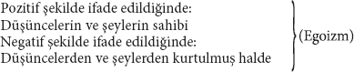

Eski Ahit: İnsan[51]
1. Tekvin; Yani, Bir İnsan Yaşamı
Aziz Max burada, "Biricik"in ya da "gerçek bir bireyin" değil, can düşmanının, "İnsan"ın biyografisini yazıyormuş gibi yapıyor. Bu onu, eğlenceli çelişkilere düşürüyor.
Her normal tekvinde olması gerektiği gibi, "insan hayatı" da ab ovo136, "çocuk"la başlıyor. Çocuk bize 13. sayfada tanıtılıyor; "daha en başında, bütün dünyaya karşı mücadelede içinde yaşar ve her şey ona karşı direnir." "Düşman kalırlar" fakat daima birbirlerine "saygı ve huşuyla" bakarlar; "hep tetiktedirler, birbirlerinin zaaflarını kollarlar." 14. sayfada bu nokta daha da açıklık kazanıyor: Çocuklar olarak "bizler şeylerin temelini ya da şeylerin arkasında yatanı bulmaya çalışırız; dolayısıyla" (yani artık düşmanlıktan kaynaklanmayan bir şekilde) "herkesin zaaflarını keşfetmeye çalışırız." (Burada gizem tüccarı Szeliga'nın parmağı var.137) Demek ki çocuk doğrudan "şeylerin temelini" bulmaya çalışan metafizikçi haline geliyor.
Oyuncaklarından çok "şeylerin doğası"na ilgi duyan bu spekülasyoncu çocuk, artık, "bazen" daimi olarak "şeyler dünyası"yla başa çıkmayı başarıyor, onu alt ediyor ve ardından yeni bir evreye, gençlik çağına giriyor. Bu evrede onu, üstesinden gelmesi gereken yeni bir "meşakkatli yaşam mücadelesi", mantığa karşı mücadele bekliyor. Çünkü "tin, ilk kez kendi kendini keşfediş demektir" ve "Bizler dünyanın üzerindeyiz, Biz tiniz" (sf. 15). Gencin bakış açısı ilahi bakış açısıdır; çocuk yalnızca "öğreniyordu"; tıpkı (çocuk) "Pilatus" gibi, "Hakikat nedir?"[52] sorusunu alelacele geçmesi gibi, "salt mantıksal ya da teolojik problemlerle oyalanmıyordu" (sf. 17). Genç, "düşüncelere hükmetmeye çalışır", "fikirleri, tini anlar" ve "fikirler arar"; "düşüncelere dalar" (sf. 16). "Mutlak düşüncelere" sahip, "yani, düşüncelerden, mantıksal düşüncelerden öte bir şeyi yok". Dolayısıyla genç kızların ve benzeri dünyevi şeylerin peşinden koşacağı yerde "edep sergileyen" delikanlı, genç "Stirner"den, Hegelci mantık yürütmekle meşgul olan ve büyük Michelet'i hayranlıkla seyre dalan Berlinli öğrenci gençten başkası değil. Bu genç hakkında 17. sayfada şunlar söyleniyor:
"Saf düşünceyi gün ışığına çıkarmak ve kendini ona adamak; bu, gençlik coşkusudur. Ve düşünce dünyasının tüm parlak görüntüleri, hakikat, özgürlük, insanlık, İnsan vs., genç tini aydınlatır ve coşturur."
Bu delikanlı artık "nesne"yi de "bir kenara bırakır" ve sadece "kendi düşünceleriyle meşgul olur." "Tinsel olmayan her şeyi küçümseyerek onları dışsal şeyler başlığı altında toplar ve aynı zamanda bu tür dışsal şeylere, mesela gençlik heyecanlarına vb. tutuluyorsa eğer, bu, onlarda tini keşfettiği zaman ve keşfettiği için oluyor; yani, bu şeyler onun için birer sembol oluşturduğunda. (Burada "Szeliga"yı "keşfetmemek" mümkün mü?) Erdemli Berlinli delikanlı! Öğrenci birliklerinin bira içme geleneği onun için yalnızca "bir sembol"dü ve yalnızca "bir sembol" hatırına kimi zaman masanın altını boylayacak kadar içti; muhtemelen masa altında da "tini keşfetmeyi" umuyordu! ... Bu erdemli delikanlının ne kadar iyi olduğu –öyle ki "erdemli delikanlı" üzerine iki cilt yazan ihtiyar Ewald138 ona gıpta edebilirdi– "baba ve anneyi terk etme gerekliliği"nin onun gözünde "her türlü doğa gücünün berhava edilmesi" "anlamına" (sayfa 15) gelmesi de ortaya koymaktadır. Onun, "Ussal"ın gözünde, "doğa gücü olarak aile yoktur; ebeveynlerden, kardeşlerden vb. bir vazgeçme söz konusudur." Ne var ki bunların hepsi "tinsel, mantıksal güçler olarak yeniden doğarlar." Böylelikle erdemli delikanlı, ebeveynlere itaatkârlık ile ebeveynlerden korkuyu spekülatif vicdanında uyumlu hale getirmiş olur ve her şey eskisi gibi yerli yerinde kalır. Aynı şekilde "şimdiki düstur" (sayfa 15) şudur: "İnsanlardan çok tanrının sözünü dinlemek gerek."139 Kuşkusuz, erdemli delikanlımız 16. sayfada ahlakın doruklarına ulaşıyor; orada "artık şu söylenir": "İnsan tanrıdan çok kendi vicdanının sesini dinlemelidir." Bu ahlaki coşkunluk onu, "intikamcı Eumenide'lerin[53]", hatta "Poseidon'un öfkesinin" bile üstüne yükseltiyor. Artık, "vicdandan" korktuğu kadar hiçbir şeyden korkmuyor.
"Asıl olanın tin" olduğunu keşfettiğinden beri, aşağıdaki türden tehlikeli sonuçlar çıkarmaktan da geri durmaz artık:
"Fakat tin asıl olan olarak kabul görmüşse de, tinin zengin mi yoksa yoksul mu olduğu, o yine de fark eder ve kişi bu yüzden" (!) "tinsel zenginliğe ulaşmaya çabalar; tin yayılmak, kendi krallığını kurmak ister; bu krallık onun az önce alt ettiği bu dünyaya ait bir krallık değildir. Böylece tin her şeyde her şey olmayı arzular"140 (nasıl yani?) "yani, her ne kadar ben tin isem de kusursuz tin değilim ve öncelikle kusursuz tini aramak zorundayım." (?) (sf. 17)
"O yine de fark eder" – Peki, "o" ne? Farkı yaratan hangi "o"? Kutsal adamımızın sözlerinde daha sık sık bu gizemli "o" ile karşılaşacağız. Ve "o"nun, töz konumundaki biricik olduğu; "biricik" mantığın başlangıcı olduğu ve böylesi olarak Hegelci "Varlık"ın ve "Hiçlik"in hakiki kimliği olduğu ortaya çıkacak. Bu nedenle, bu "o"nun ettiği, söylediği ve yaptığı her şeyden, ona yaratıcı olarak yaklaşan azizimizi sorumlu tutacağız. Gördüğümüz gibi, bu "o", her şeyden önce zengin ile yoksul arasında bir ayrım yapıyor. Peki neden? Çünkü "tin, asıl olan olarak tanımlandı". Zavallı "o"! Bu bilgi olmasaydı, zengin ile yoksul arasındaki farkı asla göremeyecekti! "Ve kişi bu yüzden çabalar" vb. "Kişi"! Burada "o"nun yanı sıra yine Stirner'in hizmetinde olan ve onun için en ağır ayak işlerini yerine getirmek zorunda kalan ikinci bir belgisiz zamirle141 karşılaşmış oluyoruz. Bu ikisinin birbirlerine koltuk çıkmaya nasıl da alışkın olduğu burada açıkça görülüyor. "O", tinin yoksul mu yoksa zengin mi olduğunu fark ederken, "kişi" de çabalar (Bu, Stirner'in sadık uşağından142 başka kimin aklına gelebilirdi ki!), "kişi bu yüzden tinsel zenginliğe ulaşmaya" çabalar. Sinyali "o" veriyor, "kişi" de derhal avazı çıktığı kadar "o"nun sesine eşlik ediyor. İş bölümü klasik biçimde yerine getirilmiş oluyor.
"Kişi tinsel zenginliğe ulaşmaya çalıştığı" için, "tin yayılmak, kendi krallığını kurmak ister" vs. "Her ne kadar" aralarında bir ilişki bulunuyorsa da, "kişi"nin "tinsel zenginlik" mi istediği, yoksa "tin"in "kendi krallığını kurmak" mı istediği "yine de fark eder". Şimdiye dek "tin" hiçbir şey istemedi; "tin" henüz şahıs olarak vücut bulmadı. Şimdiye dek söz konusu olan, genel olarak "tin" değil, özne olarak tin değil, yalnızca "gencin" tiniydi. Fakat kutsal yazarımızın şimdi ihtiyaç duyduğu, gencin tininin karşısına, ona yabancı, son tahlilde kutsal tin olarak çıkarabileceği, başka bir tindir. Hokkabazlık No:1.
"Böylece tin her şeyde her şey olmayı arzular." Bu muğlâk ifade daha sonra şöyle açıklanıyor: "Her ne kadar ben tin isem de kusursuz tin değilim ve öncelikle kusursuz tini aramak zorundayım." Fakat, Aziz Max "kusurlu tin" ise de, onun kendi tinini "kusursuz hale getirmek" mi yoksa "kusursuz tin"i aramak mı zorunda olduğu "yine de fark eder". Birkaç satır önce aslında, yalnızca "zengin" ve "yoksul" tinle –nicel ve dünyevi bir ayrım– ilgileniyordu; ama şimdi birdenbire "kusurlu" ve "kusursuz" tin çıkıyor ortaya; nitel ve gizemli bir ayrım. İnsanın kendi tinini geliştirme çabası artık, "kusurlu tin"in "kusursuz tin" avına çıkmasına dönüşebilir. Kutsal tin, hayalet olarak ortalıkta dolanıyor. Hokkabazlık No: 2.
Kutsal yazarımız devam ediyor:
"Fakat böylece" (yani, benim tinimi "kusursuz hale getirme" çabamın "kusursuz tin" arayışına dönüşmesiyle), "kendimi henüz tin olarak keşfetmiş olan ben, kendimi hemen tekrar kaybediyorum. Şöyle ki, kusursuz tin karşısında ben, kendime ait olmayan, aksine öteki dünyaya ait kendim olarak boyun eğiyor ve kendi boşluğumu hissediyorum." (sf. 18)
Bu, 2 No'lu hokkabazlığın bir kez daha gerçekleştirilmesinden başka bir şey değil. "Kusursuz tin", bir kez mevcut bir varlık olarak varsayılıp "kusurlu tin"in karşısına konuldu mu, "kusurlu tin", yani genç haliyle "kendi boşluğunu" yüreğinin derinlerinde acı acı duyacaktır. Devam!
"Gerçi her şey tine bağlı, ama her tin doğru tin midir? Doğru ve hakiki tin, tinin ideal olanı, 'kutsal tin'dir. O ne benim ne de senin tinindir, tam tersine tam da" (!) "ideal, öteki dünyaya ait bir tindir, o 'Tanrı'dır, 'Tanrı tindir'."143 (sf. 18)
Burada, birdenbire, "kusursuz tini", "doğru" tine ve hemen ardından da "doğru ve hakiki tine" dönüştürülmüş buluyoruz. O ise, "tinin ideal olanı, kutsal tin" olarak tanımlanarak daha açık bir şekilde belirleniyor ve bu, onun "ne benim ne de senin tinin, tam tersine, tam da ideal, öteki dünyaya ait bir tin" olmasıyla tanıtlanıyor. Hakiki tin, tinin idealidir, çünkü "tam da" ideal bir tindir! O kutsal tindir, çünkü o "tam da" tanrıdır! Ne "düşünce ustalığı" ama! Bu arada, şu ana kadar "senin" tininin henüz hiç mevzu bahis olmadığını da belirtmiş olalım. Hokkabazlık No: 3.
Dolayısıyla, eğer kendimi bir matematikçi olarak yetiştirmeye, ya da Aziz Max'ın sözleriyle ifade edecek olursak, kendimi bir matematikçi olarak "kusursuz hale" getirmeye çalışıyorsam, o halde "kusursuz" matematikçiyi arıyorum demektir. Yani "doğru ve hakiki" matematikçiyi, matematikçinin "ideali"ni, benden ve senden farklı olan, "kutsal" matematikçiyi (senin gözünde kusursuz bir matematikçi olmanın burada önemi yoktur; tıpkı Berlinli delikanlının felsefe profesörünü kusursuz tin olarak görmesinin bir öneminin olmaması gibi); "tersine tam da ideal ve öteki dünyaya ait olan" matematikçiyi; gökyüzündeki matematikçiyi, "tanrı"yı arıyorum demektir. Tanrı matematikçidir.
Aziz Max tüm bu yüce sonuçlara ulaşıyor, çünkü "tinin zengin mi yoksa yoksul mu olduğu, fark eder"; yani anlaşılır bir dile çevirecek olursak, bir kimsenin tinsel bakımdan zengin mi yoksa yoksul mu olduğu fark eder ve çünkü, onun "delikanlısı" bu garip olguyu keşfetti.
Aziz Max 18. sayfada devam ediyor:
"Adamı delikanlıdan ayıran şey; onun dünyayı olduğu gibi kabul etmesidir" vs.
Demek ki, ne gencimizin dünyayı "olduğu gibi" kabul ettiği noktaya nasıl ulaştığını öğrenebiliyoruz, ne de bizim kutsal diyalektikçimizi, delikanlılıktan adamlığa geçiş yaparken gözlemleyebiliyoruz. Öğrendiğimiz tek şey "O"nun bu hizmeti yerine getirmek ve genci adamdan "ayırmak" zorunda olduğudur. Ama bu "O" bile tek başına, biricik düşüncelerle dolu ağır yük arabasını harekete geçirmeye güç yetiremiyor. Çünkü "O", "adamı gençten ayırdıktan" sonra, adam tekrar bir delikanlılığa geri düşüşle, yeniden "yalnızca tinsel olanla" meşgul olmaya başlıyor ve ta ki "Kişi"144 imdada yetişip atları yenileyene kadar harekete geçemiyor. "Ancak kişiler birbirlerinin sevgisini cismen kazandığı vb. zaman" (sf. 18) "ancak o zaman" her şey tekrar yoluna giriyor. Adam, kişisel bir ilgisi olduğunu keşfediyor ve "ikinci" bir "kendi kendini keşfedişe" ulaşıyor. Zira, kendisini yalnızca, delikanlının yaptığı gibi "tin olarak keşfedip hemen ardından tekrar yeniden tümel tin içinde kaybolmakla" kalmıyor, ayrıca "cismani tin" olarak da keşfediyor (sf. 19). Bu "cismani tin" nihayet, (delikanlının yaptığı gibi) "yalnızca tininin tatminiyle" ilgilenmekle kalmaz, "eksiksiz tatminle, tam tekmil er kişinin tatminiyle ilgilenir" (tam tekmil er kişinin tatminiyle ilgilenir!) hale de gelir. "Olağan, doğal yaşamında bir arzu duyar" olur. Stirner'in "adamı", bir Alman olarak, her şeye fazlasıyla gecikerek ulaşıyor. Oysa Paris bulvarlarında ya da Londra'nın Regent caddesinde, kendilerini henüz "cismani tin" olarak keşfedememiş ama "olağan, doğal yaşamında bir arzu" duymaktan hiç de geri kalmayan ve asıl ilgilerini "tam tekmil er kişinin tatminine" yoğunlaştırmış yüzlerce "delikanlının", muscadins ve dandies'in145 aylak aylak dolaştığını pekâlâ görebilirdi.
Bu ikinci "kendi kendini keşfediş", bizim kutsal diyalektikçimizi öyle bir coşturuyor ki, aniden rolünü unutuveriyor ve adamdan değil kendisinden söz etmeye başlıyor; bizzat kendisinin Biricik olduğunu, "Adam" olduğunu, "Adam" = "Biricik" olduğunu ifşa ediyor. Yeni bir hokkabazlık.
"Şeylerin ardında kendimi nasıl keşfettiysem" ("genç kendisini nasıl keşfettiyse" demek isteniyor) yani tin olarak; daha sonraları düşüncelerin ardında kendimi" ("adam kendisini" demek isteniyor) "de öyle keşfetmeliyim, hem de yaratıcı ve mülk sahibi olarak. Tin çağında düşünceler kafamda büyüdükçe büyüyor, beni" (delikanlıyı) "aşıyordu; oysa onun ürünüydüler. Âdeta ateşli sanrılar gibi başıma üşüşüp dehşetli bir güçle sarsıyorlardı beni. Düşünceler kendi için şeyler olup cisimleşmiş, birer hayalet olmuşlardı; tıpkı tanrı gibi, imparator, papa, anavatan gibi vs. Ama onların cisimleşmişliklerini yok edersem, onları yeniden kendi cismaniliğime dâhil eder ve şöyle derim: Bir tek ben cismaniyim. Ve artık dünyayı, benim için olduğu şey olarak kabul ediyorum, bana ait, benim mülküm olarak kabul ediyorum: Her şeyi kendime bağlıyorum."
Böylece burada "Biricik"le özdeşleştirilen adam, önce düşüncelere cismanilik kazandırdıktan, yani onları hayaletlere dönüştürdükten sonra, şimdi, bu cismaniliği kendi cismine gerisin geri dâhil ederek yok ediyor; dolayısıyla da kendi cismini hayaletinki olarak kurguluyor. Ancak hayaletleri yadsıyarak kendi cismaniliğine ulaşıyor olması, adamın bu kurgulanmış cismaniliğinin niteliğini göstermektedir ki, onun buna inanması için, önce bunu "kendisine söylemek" durumunda kalıyor. "Ve kendisine söylediği şeyi" bile doğru söylemiyor. Onun "biricik" cisminin haricinde türlü türlü bağımsız cisimlerin, spermatozoaların kafasında mesken tutmayışını bir "söylence"ye146 dönüştürüyor: Bir tek ben cismaniyim. Bir hokkabazlık daha.
Devam edelim: Delikanlıyken kafasını, imparator, anavatan, devlet vs. gibi her türlü mevcut güçlerle ve ilişkiler üzerine birçok ipe sapa gelmez şeylerle doldurup onları yalnızca tasavvurlar biçiminde kendi "sanrıları" olarak tanımış olan Adam, Aziz Max'a göre, bu güçleri gerçekten yok ediyor. Bunu da onlar hakkında sahip olduğu yanlış fikri kafasından çıkarıp atarak yapıyor. Tersten okuyacak olursak: Dünyaya artık kendi hayal gücünün gözlüğünden bakmadan gören Adam, artık onun pratik bağlamıyla ilgilenmek, bu bağlamı tanımak ve ona göre tutum almak durumunda kalıyor. Dünyanın, sahip olduğunu düşündüğü hayali cismaniliğini yok ederek onun, hayal gücünün dışındaki gerçek cismaniliğini keşfediyor. İmparatorun hayaletimsi cismaniliğinin ortadan kalkmasıyla, onun açısından imparatorun cismaniliği değil hayaletselliği yok oluyor ve onun gerçek gücünü tüm boyutlarıyla ancak şimdi takdir edebilir hale geliyor. Hokkabazlık No: 3 [a].
Gencimiz Adam haliyle, başkaları için de geçerli olan ve kategoriler olarak kabul gören düşüncelere bile eleştirel bir yaklaşım göstermiyor. Aksine, yalnızca "kendi kafasının çıplak ürünleri" olan düşüncelere, yani mevcut koşullar üzerine, kafasında yeniden doğan genel tasavvurlara böyle yaklaşıyor. Anlayacağımız "anavatan" kategorisini bile ortadan kaldırmıyor; yalnızca, bu kategori hakkındaki kendi kişisel görüşünü ortadan kaldırıyor ki, genel kabul gören kategoriye hâlâ bir halel gelmiş olmuyor ve "felsefi düşünce" alanında dahi işin daha yeni başladığı yere ulaşmış oluyor. Fakat bize, onunla kurduğu huzurlu kişisel ilişkiye son verdiği için, kategorinin kendisini ortadan kaldırdığını yutturmaya çalışıyor. Tıpkı az önce imparatora dair fantastik tasavvurundan vazgeçerek imparatorun gücünü yok ettiğini yutturmaya kalkıştığı gibi. Hokkabazlık No: 4.
"Ve artık", diye devam ediyor Aziz Max, "dünyayı, benim için var olarak kabul ediyorum, bana ait, benim mülküm olarak kabul ediyorum."
Dünyayı kendisi için var olarak kabul ediyor; yani, kabul etmek zorunda kaldığı şey olarak ve böylece dünyayı kendisine mal ediyor, onu kendi mülkü yapıyor. Bu, hiçbir iktisatçıda rastlanmayan bir edinme tarzı olsa da, yöntemini ve başarısını "Kitap", bir o kadar ihtişamla ortaya koyacak. Ne var ki Aziz Max, esas olarak "Dünya"yı değil, yalnızca dünyaya dair kendi "ateşli sanrısını", yani kendine ait saydığı dünyayı kabul ediyor ve onu kendi mülkü haline getiriyor. O dünyayı kendi dünya tasavvuru olarak kabul ediyor ve kendi tasavvuru olarak dünya, onun tasavvur ettiği mülkiyettir; tasavvurunun mülkiyetidir, mülkiyet olarak tasavvurudur, tasavvur olarak mülkiyettir, kendine özgü tasavvurudur ya da onun mülkiyete dair tasavvurudur. Ve tüm bunları o emsalsiz cümleyle dile getiriyor: "Her şeyi kendime bağlıyorum."
Azizimizin kendisinin de kabul ettiği üzere adam, sırf delikanlı hayaletler gördüğü için hayaletlerin dünyayı mesken tuttuğunu kavradıktan sonra ve delikanlılıktaki zahiri dünya onun açısından yok olduktan sonra, artık delikanlılık imgelemlerinden bağımsız, gerçek bir dünya içinde bulunur.
Dolayısıyla bunu şöyle okumak gerek: Ve ben böylece dünyayı kendimden bağımsız, kendisine ait bir şey olarak kabul ediyorum ("adam dünyayı olduğu gibi kabul ediyor" (sf. 18) dilediği gibi değil). Önce benim mülküm olmadığını kabul ediyorum (bugüne kadar yalnızca bir hayalet olarak benim mülkümdü); kendimi her şeye bağlıyorum ve ancak bu bakımdan her şeyi kendime bağlıyorum.
"Tin iken dünyayı hor görerek reddettiysem, mülk sahibi olarak hayaletleri veya fikirleri kendi kibirliliğine terk ediyorum. Artık benim üzerimde nüfuzları yok, tıpkı 'yeryüzündeki hiçbir gücün' tin üzerinde bir nüfuzu olmadığı gibi." (sf. 20)
Burada mülk sahibinin, yani Stirner'in adamının, kendi tabiriyle yalnızca "ateşli sanrılardan" ve "hayaletlerden" ibaret olan gencin mirasına, sine beneficio deliberandi atque inventarii147, derhal konuverdiğini görüyoruz. O, çocukluktan gençliğe geçiş sürecinde şeylerin dünyasıyla, delikanlılıktan adamlığa geçiş sürecinde de tinler dünyasıyla gerçekten baş ettiğine ve şimdi adam olmuşken tüm dünyayı avucunun içine aldığına, artık hiçbir şeyin başını ağrıtmayacağına inanmaktadır. Eğer şimdi, delikanlının söylediklerini tekrarlayarak söylediği gibi, kendisi dışında, dünyadaki hiçbir gücün tin üzerinde bir nüfuzu yoksa, tin de dünya üzerindeki en yüce güçse ve O, yani adam, her şeye kadir tini kendine tabi kılmışsa, o halde bu adam, sonuna kadar her şeye kadir değil midir? O, anavatan vb. düşüncelerin yalnızca "Genç"in kafasında aldığı fantastik ve hayaletimsi şekli yok ettiğini, ama gerçek ilişkiler ifade ettikleri ölçüde bu düşüncelere henüz dokunmamış olduğunu unutuyor. Düşüncelerin efendisi olmak şöyle dursun, o ancak şimdi, "düşüncelere" ulaşabilecek hale gelmiştir.
"Şimdi sonuç olarak" kutsal adamımızın, yaşamın farklı aşamalarıyla ilgili kurgusunu istenilen ve önceden belirlenmiş amaca ulaştırdığının "aşikâr olduğu söylenebilir" (sf. 199). Ulaştığı sonucu bize, bir önerme –hayaletimsi bir gölge– ile bildiriyor; biz ise onu, yitirip kaybettiği cismiyle yeniden yüzleştirmek istiyoruz.
| Biricik önerme (sf. 20) | Refakat eden bağımsız gölgenin sahibi | |
| "Çocuk gerçekçiydi, bu dünyaya ait şeylerin esiriydi; ta ki yavaş yavaş bu şeylerin arkasında yatanı bulmayı başarana kadar. Genç idealistti; esinini düşüncelerden alıyordu; ta ki şeylerle ve düşüncelerle canının istediği gibi hareket eden ve kişisel çıkarlarını her şeyin üstünde tutan bencil bir adam oluncaya kadar. Peki ya nihayetinde ihtiyar? Bir ihtiyar olduğumda, bu konuda konuşacak yeterince zamanım olacak." | Çocuk gerçekten kendisine ait şeylerin dünyasının esiriydi; ta ki yavaş yavaş (ödünç bir gelişim hokkabazlığı ile) tam da bu şeyleri arkasında bırakmayı başarana kadar. Genç hayalperestti ve coşkudan düşüncelerini yitirmişti; ta ki adam onu, kişisel çıkarlar kendisini her şeyin üstünde tuttuğu için, şeylerle ve düşüncelerle canının istediği gibi hareket eden bencil bir yurttaş haline gelene kadar. Peki ya nihayetinde ihtiyar? – "Kadın, seninle ne yapacağım ben?"2 |
Dolayısıyla148, "sonuç olarak" "bir insan yaşamının" bütün hikâyesinin şuna karşılık geldiğini söyleyebiliriz:
1. Stirner hayatın çeşitli evrelerini, yalnızca bireyin "kendi kendini keşfedişleri" olarak ele alıyor; üstelik de bu "kendi kendini keşfedişler" daima belirli bir bilinç ilişkisine indirgeniyor. Demek ki burada bireyin yaşamını, bilinçteki farklılık oluşturuyor. Bireyle birlikte gerçekleşen ve farklı bir bilinç meydana getiren fiziksel ve toplumsal değişimler, Stirner'i elbette hiç mi hiç ilgilendirmiyor. Bu yüzden Stirner'de çocuk, genç ve adam, dünyayı daima hazır halde buluyorlar; tıpkı "kendilerini" sadece "buluyor" olmaları gibi. Genel olarak bir şeyin bulunabilmesini sağlamak içinse kesinlikle hiçbir şey yapılmıyor. Hatta bilinç ilişkisi bile doğru biçimde değil, sadece spekülatif çarpıtılmış haliyle kavranıyor. Bu nedenle de tüm bu figürlerin dünyaya yaklaşımları felsefidir; "çocuk gerçekçi", "genç idealist", adam da bu ikisinin negatif bileşimi; yukarıda aktarılan sonuç önermeden de anlaşılacağı gibi mutlak negatifliktir. Burada "bir insan yaşamının" sırrı ifşa ediliyor. Burada, "Çocuk"un "gerçekçiliğin", "Genç"in "idealizmin" bir kisvesinden başka bir şey olmadığı, Adam'ın da bu felsefi karşıtlığın bir çözümünü bulma girişimi olduğu açığa çıkıyor. Bu çözüm, bu "mutlak negatiflik", şimdiden anlaşıldığı üzere, ancak adamın hem çocuğun hem de gencin illüzyonlarını körü körüne kabul etmesi ve böylelikle şeyler dünyası ile tinin dünyasını alt etmiş olduğuna inanması sayesinde mümkün olabiliyor.
2. Aziz Max, bireyin fiziksel ve sosyal "yaşamını" dikkate almayarak, hiçbir biçimde "yaşam"dan söz etmeyerek, son derece tutarlı bir biçimde tarihsel devirlerden, milliyetlerden, sınıflardan vb. soyutluyor ya da bununla tamamen aynı anlamda, yaşadığı çevrede kendisine en yakın duran sınıfın egemen bilincini şişirerek, "bir insan yaşamı"nın normal bilinci haline getiriyor. Bu yerel muallim dar kafalılığın üstüne çıkabilmek için, "kendi" gencini, karşısına çıkan ilk büro-genciyle, genç bir İngiliz fabrika işçisiyle, genç bir Yankee ile karşılaştırması yeter. Kırgız Kazak gencin sözünü bile etmiyoruz.
3. Azizimizin muazzam saflığı –kitabının esas tini– gencinin çocuğuna, adamının da gencine inanmasına yol açmakla kalmıyor. Stirner'in bizzat kendisi, belli "gençlerin", belli "adamların" vb., kendileri hakkında sahip oldukları ya da sahip olduklarını iddia ettikleri yanılsamaları, bu son derece şaibeli gençlerin ve adamların "yaşamı" ile, gerçekliği ile körlemesine karıştırıveriyor.
4. İnsan yaşamının evrelerinin tüm yapısının prototipi, daha önce Hegel'in Ansiklopedi'sinin[54] üçüncü bölümünde ve "çeşitli değişikliklerle" yine Hegel'in diğer çalışmalarında zaten betimlenmişti. Ama "kendi amaçları"nın peşinde koşan Aziz Max'ın elbette burada da belirli "değişikliklerde" bulunması şarttı. Örneğin Hegel, ampirik dünyanın kendisini, Alman kent yurttaşını onu çevreleyen dünyanın uşağı olarak betimleyecek kadar belirlemesine izin verirken hâlâ Stirner'in onu –imgelemde bile öyle değilken– bu dünyanın efendisi yapması gerekiyordu. Aynı şekilde Aziz Max, sanki ampirik nedenlerden dolayı ihtiyardan söz etmiyormuş gibi yapıyor; çünkü bir ihtiyar olana kadar beklemek istiyormuş (yani "bir insan yaşamı" = onun biricik yaşamı). Hegel, insan yaşamının dört evresini dirilikle kurmaya koyuluyor; çünkü reel dünyada yadsımanın çifter kez gerçekleştiğini varsayıyor; yani ay ve kuyruklu yıldız olarak (Bkz: Hegel'in Doğa Felsefesi), dolayısıyla da burada üçlünün149 yerini dörtlü alıyor. Stirner biricikliğini, ay ve kuyruklu yıldızı çakıştırarak koyuyor ve böylelikle talihsiz ihtiyarı "bir insan yaşamı"ndan silip atıyor. Bu hokkabazlığın nedenini birazdan, insanın biricik tarihinin yapısını incelerken açığa çıkaracağız.
2. Eski Ahit'in Ekonomisi
Şimdi bir an için, "hukuk"tan "peygamberler"e sıçramamız gerekiyor; çünkü daha bu noktada gökyüzündeki ve yeryüzündeki biricik ev idaresinin sırrını açığa çıkarıyoruz. Eski Ahit'te bile halen yasanın, yani insanın yetiştirici olarak Biricik'e hükmettiği (Galatyalılar, 3:24) Biricik'in krallığının tarihi, ezelden beridir belirlenmiş olan bilge bir planı izler. Kutsal insanları kendi kutsallıklarından kurtarmanın vakti geldiğinde, Biricik'in dünyaya gelebilmesi için her şey öngörülüp belirlenmiştir.
İlk kitaba, "Bir İnsan Yaşamı"na, aynı zamanda "Tekvin" de denmektedir çünkü bu kitap, biricik ev idaresini embriyon halinde içermekte, zamanın dolduğu, dünyanın sonunun geldiği ana kadar tüm gelişmelerin bir prototipini sunmaktadır. Bütün bir biricik tarih, üç aşama etrafında dönüp durur: Çocuk, genç ve adam. Bu evreler, "çeşitli değişimlerle birlikte" daima genişleyen çevrimlerde yinelenir ve bu, şeyler dünyasıyla tinin dünyasının tüm tarihi çözülüp "çocuk, genç ve adam" haline gelene dek devam eder. Daha önce bu aşamaları, her yerde sadece kılık değiştirmiş "çocuk, genç ve adam"ı bulacağız; tıpkı daha önce onları, üç kategorinin kılık değiştirmiş hali olarak bulmuş olduğumuz gibi.
Yukarıda Alman felsefi tarih anlayışından söz ettik. Burada, Aziz Max'ta, bunun parlak bir örneğini görüyoruz. Spekülatif düşünce, soyut tasavvur, tarihin itici gücü haline getiriliyor, dolayısıyla da tarih salt felsefe tarihine dönüştürülüyor. Ne var ki bu tarih bile, gerçek tarihsel ilişkilerin etkisi altında nasıl geliştiği bir yana, mevcut kaynaklara göre meydana geldiği haliyle bile değil, son Alman filozofları, özellikle de Hegel ve Feuerbach tarafından anlaşıldığı ve betimlendiği haliyle kabul ediliyor. Ve bu betimlemelerin arasından yine yalnızca, verili amaca uygun hale getirilebilenler ve azizimize geleneksel olarak aktarılanlar seçilip alınıyor. Böylece tarih, salt sözde fikirlerin bir tarihi, tinlerle hayaletlerin tarihi haline getiriliyor ve bu hayaletler tarihinin temeli olan gerçek, ampirik tarih, sadece bu hayaletleri ete kemiğe büründürmek için sömürülüyor. Ampirik tarihten yalnızca, bu hayaletleri gerçeklik kisvesine büründürmek için ihtiyaç duyulan isimler devralınıyor. Azizimiz, bu deneyi gerçekleştirirken sık sık kantarın topuzunu kaçırıp düpedüz bir hayaletler hikâyesi yazıyor.
Azizimizde, bu tarih yapma yönteminin en naif, en klasik bönlükle uygulandığını görüyoruz. Daha önce çocuk, genç ve adam biçiminde karşılaşmış olduğumuz üç basit kategori; realizm, idealizm ve bu ikisinin birleşiminden oluşan (ve burada "egoizm" olarak adlandırılan) mutlak negatiflik, tüm bir tarihin temeli haline getiriliyor ve türlü türlü tarihsel kamuflajla bezeniyor. Mütevazı bir yardımcı kategoriler maiyeti eşliğinde sunulan tüm sözde tarihsel evrelerin içeriğini bunlar oluşturuyor. Aziz Max burada, tarihin Alman filozofları tarafından hazırlanan kurgusal içeriğine olan inancı, bütün öncellerini gölgede bırakacak kadar uç noktaya vardırarak, devasa inancını bir kez daha ispat ediyor. Yani, bu tantanalı ve uzun uzadıya tarih kurgusunda söz konusu olan yegâne şey, artık ortalıkta gözükebilecek yüzleri kalmamış olan bu klişeleşmiş üç kategoriye, ihtişamlı bir dizi etkileyici isim bulmaktır. Bizim kutsanmış yazarımız "Adam"dan (sf. 20) "Ben"e (sf. 207) ya da hatta "Biricik"e (sf. 478) pekâlâ hemen de geçebilirdi; fakat bu fazla basit olurdu. Üstelik Alman spekülatörleri arasındaki büyük rekabet, her yeni rakibin malını bir tarihsel reklamla bangır bangır duyurmasını zorunlu kılmaktadır.
Dottore Graziano'nun[33] sözleriyle ifade edecek olursak, "gerçek gelişmenin gücü" aşağıdaki "dönüşümlerle en etkili biçimde yolunu kaybediyor":
Temel:
I. Realizm
II. İdealizm
III. İkisinin negatif birliği. "Kişi". (sf. 485)
Birinci adlandırma:
I. Çocuk, şeylere bağımlı (Realizm)
II. Genç, düşüncelere bağımlı (İdealizm)
III. Adam (negatif birlik olarak)

İkinci, tarihsel adlandırma:
I. Zenci (Realizm, Çocuk)
II. Moğol (İdealizm, Genç)
III. Kafkas (Realizmin ve idealizmin negatif birliği, Adam)150.
Üçüncü, en genel adlandırma:
I. Gerçekçi egoist (bildik anlamda Egoist) – Çocuk, Zenci
II. İdealist egoist (Zahit) – Genç, Moğol
III. Gerçek egoist (Biricik) – Adam, Kafkas
Dördüncü tarihsel adlandırma. Önceki evrelerin Kafkas kategorisi içinde yinelenmesi.
I. Antikler. Zencimsi Kafkaslar – çocuksu adamlar – putperestler – şeylere bağımlı – gerçekçiler – dünya.
Geçiş ("şeyler dünyası"nın arkasında yatanları bulan çocuk): Sofistler, septikler vb.
II. Modernler. Moğolumsu Kafkaslar – genç adamlar – Hıristiyanlar – düşüncelere bağımlı – idealistler – tin.
1. Saf tin tarihi151, tin olarak Hıristiyanlık, "tin".
2. Saf-olmayan tin tarihi. Başkaları bakımından tin. "Musallatlılar".
A. Saf saf-olmayan tin tarihi.
a) Heyula, hayalet, zencimsi durumdaki tin, şeysel tin ve tinsel şey – Hıristiyanlar için nesnel varlık, çocuk olarak tin.
b) Saplantı, sabit fikir, Moğolumsu durumdaki tin, tindeki tinsellik, bilinç içindeki belirlenim, Hıristiyan içindeki düşünsel varlık – Genç olarak tin.
B. Saf-olmayan, saf-olmayan (tarihsel) tin tarihi.
a) Katoliklik – Ortaçağ (Zenci, Çocuk, Realizm vb.)
b) Protestanlık – Modern çağdaki modern çağ (Moğol, Genç. İdealizm vb.) Protestanlık içerisinde yine altbölümler oluşturmak mümkün. Örneğin:
α) İngiliz felsefesi – Realizm, Çocuk, Zenci.
β) Alman felsefesi – İdealizm, Genç, Moğol.
3. Hiyerarşi. İkisinin, Moğolumsu-Kafkas bakış açısı içerisindeki negatif birliği. Bu birlik, tarihsel ilişkinin mevcut bir ilişkiye dönüştürüldüğü ya da karşıtların yan yana sunulduğu yerde ortaya çıkar. Yani, burada bir arada var olan iki aşama görmekteyiz:
A. Eğitimsizler152 (Kötüler, burjuvalar, bildik anlamda egoistler) = Zenciler, çocuklar, Katolikler, gerçekçiler vb.
B. Eğitimliler (İyiler, citoyens153, zahitler, rahipler vb.) = Moğollar, gençler, Protestanlar, idealistler.
Bu iki aşama yan yana var olur, dolayısıyla da bundan "eğitimliler"in "eğitimsizler" üzerinde egemen olduğu "kolayca" anlamak mümkün; bu hiyerarşidir. O halde, tarihsel gelişimin ileriki aşamasında
Eğitimsizden Hegelci-olmayan,
Eğitimliden de Hegelci*41 olur.
Bu da demektir ki Hegelciler Hegelci-olmayanlar üzerinde egemendir. Böylece Stirner, tarihte spekülatif düşüncenin egemenliğine dair spekülatif tasavvuru, bizzat spekülatif filozofların egemenliğine dönüştürmektedir. Onun bugüne kadar savunduğu tarih anlayışı, yani düşüncenin egemenliği anlayışı, hiyerarşi içinde şimdi fiilen var olan bir ilişki haline, ideologların dünya egemenliği haline gelir. Bu, Stirner'in boğazına kadar spekülasyona battığını göstermektedir. Spekülatörlerin ve ideologların bu egemenliği, "artık zamanı geldiğinden", sonunda aşağıdaki adlandırmalara dönüşür:
a) Şeylere bağımlı, kişilerden bağımsız politik liberalizm – Realizm, Çocuk, Zenci, Antik, Heyula, Katoliklik, Eğitimsiz, Efendisiz.
b) Şeylerden bağımsız, tine bağımlı, nesnesiz sosyal liberalizm – İdealizm, Genç, Moğol, Modern, Saplantı, Protestanlık, Eğitimli, Mülkiyetsiz.
c) İnsani liberalizm – efendisiz ve mülkiyetsiz, yani Tanrısız; çünkü Tanrı aynı zamanda hem en yüce efendidir, hem de en yüce mülkiyettir. Hiyerarşi – liberalizm alanındaki negatif birlik; dolayısıyla da şeyler ve düşünceler dünyası üzerinde egemenlik, aynı zamanda egoizmin ortadan kaldırılması biçimindeki tamamına ermiş egoist: Tamamına ermiş hiyerarşi. Bu aynı zamanda,
geçişi (düşünceler dünyasının sırrına eren genç) oluşturur; yani:
III. "Ben"e – yani kusursuz Hıristiyan, kusursuz insan, Kafkasyalı Kafkas ve gerçek egoiste geçiş. Tıpkı Hıristiyan'ın antik dünyayı ortadan kaldırarak tine dönüşmesi gibi, Ben de idealizmin, gencin, Moğol'un, modern insanın, Hıristiyanın, musallatlının, saplantılının, Protestanın, eğitimlinin, Hegelcinin ve insancıl liberalin sine beneficia deliberandi et inventarii154 mirasına konmak suretiyle tinler âlemini dağıtarak cismani bir varlığa155 dönüşür.
NOT 1. Ayrıca "zaman zaman" akıl, yürek vs. gibi Feuerbachçı ve başka kategoriler de uygun vesilelerde tablonun renk uyumunu arttırmak ve yeni efektler yaratmak üzere "eklenebilir". Bunların da kesintisiz idealizme ve realizme geçirilmiş yeni kılıflardan başka bir şey olmadığı aşikâr.
2. Oldukça dindar olan Aziz Max'ın –Jacques le bonhomme'un156– gerçek, dünyevi tarih hakkında söyleyebileceği gerçek ve dünyevi hiçbir şeyi yok. Tek yaptığı, "doğa", "şeyler dünyası", "çocuğun dünyası" vb. gibi adlandırmalar altında onu, daima bir spekülasyon nesnesi olarak, sürekli yok edilmesine rağmen her fırsatta kendisini yeniden göstermek üzere gizemli bir karanlıkta varlık sürdüren bir dünya olarak, bilincin karşısına çıkarmaktır. Herhalde, çocuklar ve zenciler var olmaya devam ettiği için, "şeyler dünyası" denilen onların dünyası da varlığını "kolaylıkla" sürdürüyor olsa gerek. Sevgili ihtiyar Hegel, tüm kurgucuların ustası olan Schelling üzerine yazarken, bu türden tarihsel ve tarihsel olmayan kurgulamalar hakkında şunların söylenmesi gerektiğini belirtmişti:
"Bu tekdüze formalizmin enstrümanını kullanmak, üzerinde yalnızca iki renk –örneğin tarihsel bir şey ("şeyler dünyası") söz konusu olduğunda yüzeyi boyamak için siyah (gerçekçi, çocuksu, zencimsi vs), "ve manzara" ("gökyüzü", tin, kutsal olan vb) söz konusu olduğunda da "sarı"157 (idealist, gencimsi, Moğol vs) "bulunan bir ressamın paletini kullanmaktan daha zor değildir." (Fenomenoloji, sf. 39)
"Sıradan bilinç", bu türden kurgulamaları aşağıdaki şarkıda çok daha isabetli bir biçimde alaya almıştır:
Efendi Jochem'i dışarı yolladı
Otları biçmesini söyledi;
Jochem otları biçmedi
Eve de dönmedi.
Efendi köpeği dışarı yolladı
Jochem'i ısırmasını söyledi,
Köpek Jochem'i ısırmadı,
Jochem otları biçmedi,
Eve kimse dönmedi.
Efendi sopayı dışarı yolladı
Köpeği dövmesini söyledi;
Sopa köpeği dövmedi,
Köpek Jochem'i ısırmadı,
Jochem otları biçmedi,
Eve kimse dönmedi.
Efendi ateşi dışarı yolladı
Sopayı yakmasını söyledi;
Ateş sopayı yakmadı,
Sopa köpeği dövmedi,
Köpek Jochem'i ısırmadı,
Jochem otları biçmedi,
Eve kimse dönmedi.
Efendi suyu dışarı yolladı
Ateşi söndürmesini söyledi;
Su ateşi söndürmedi,
Ateş sopayı yakmadı,
Sopa köpeği dövmedi,
Köpek Jochem'i ısırmadı,
Jochem otları biçmedi,
Eve kimse dönmedi.
Efendi öküzü dışarı yolladı
Suyu içmesini söyledi;
Öküz suyu içmedi,
Su ateşi söndürmedi,
Ateş sopayı yakmadı,
Sopa köpeği dövmedi,
Köpek Jochem'i ısırmadı,
Jochem otları biçmedi,
Eve kimse dönmedi.
Efendi kasabı dışarı yolladı
Öküzü kesmesini söyledi;
Kasap öküzü kesmedi,
Öküz suyu içmedi,
Su ateşi söndürmedi,
Ateş sopayı yakmadı,
Sopa köpeği dövmedi,
Köpek Jochem'i ısırmadı,
Jochem otları biçmedi,
Eve kimse dönmedi.
Efendi cellâdı dışarı yolladı
Kasabı asmasını söyledi;
Cellât kasabı astı
Kasap öküzü kesti
Öküz suyu içti
Su ateşi söndürdü
Ateş sopayı yaktı
Sopa köpeği dövdü
Köpek Jochem'i ısırdı
Jochem otları biçti
Ve hep birlikte eve döndüler.158
Şimdi, Jacques le bonhomme'un bu şemayı nasıl bir "düşünce kıvraklığı" ile ve lise talebelerine özgü malzemelerle geliştirdiğini görme fırsatını bulacağız.
3. Antikler
Doğrusunu isterseniz burada önce zencilerle başlamamız gerekirdi, fakat "Muhafızlar Konseyi"nde sandalyesi olduğundan kuşku duymadığımız Aziz Max, akıl ermez bilgeliğiyle zencileri daha sonra işin içine sokuyor ve orada bile "kesinlik ve sınanmışlık iddiasında bulunmuyor". Dolayısıyla, burada Yunan felsefesini zencimsi çağın, yani Sesostris Seferleri'yle Napolyon'un Mısır Harekâtı'nın[55] önüne geçiriyorsak eğer, bunun nedeni, mübarek yazarımızın her şeyi bilgece düzenlediğinden emin olmamızdır.
"O halde", Stirner'in antiklerini "baştan çıkaran faaliyetlere bir göz atalım":
"'Antikler için dünya bir hakikatti' diyor Feuerbach; fakat şu önemli eklemeyi yapmayı unutuyor: Hakikat dışılığını ortaya çıkarmaya çalıştıkları, sonunda da çıkardıkları bir hakikat." (sf. 22)
"Antikler için" kendi "dünya"ları (dünya değil) "bir hakikatti". Bunu söyleyerek kuşkusuz, antik dünya hakkında hiçbir hakikat ortaya konmuş olmuyor; yalnızca, Antiklerin kendi dünyaları hakkında Hıristiyan bir yaklaşıma sahip olmadıkları söylenmiş oluyor. Onların dünyasına hakikat dışılık sızar sızmaz (yani, bu dünya pratik çatışmalar sonucunda kendisi içinde çöker çökmez; ki bu materyalist gelişimi ampirik olarak kanıtlamak, bu meseledeki yegâne ilginç şey olurdu), Antik filozoflar hakikatin dünyasının ya da kendi dünyalarının hakikatinin peşine düştüler ve ardından elbette, onun hakikat-dışı hale geldiğini keşfettiler. Onların bu arayışlarının kendisi bile, bu dünyanın içsel çöküşünün bir belirtisiydi. Jacques le bonhomme, idealist belirtiyi, çöküşün maddi nedenine dönüştürüyor ve bir Alman kilise babası olarak Antikçağın kendisini, kendi yadsımasını, Hıristiyanlığı aramaya yolluyor. Antikçağ, Jacques le bonhomme'da bu durumda olmak zorunda, çünkü Antikler, "şeyler dünyası"nın sırrına ermeye çalışan "çocuklar"dır. "Ve bu da oldukça kolaydır": Jacques le bonhomme antik dünyayı, antik dünya hakkındaki sonraki bilince dönüştürdüğünden, elbette tek bir hamleyle materyalist Antik dünyadan din dünyasına, Hıristiyanlığa sıçrayabilmektedir. Şimdi, Antikçağın gerçek dünyasının karşısına derhal "Tanrı sözü" dikilir; filozof olarak kabul edilen Antik insanın karşısına modern septik olarak kabul edilen Hıristiyan dikilir. Onun Hıristiyanı "Tanrı sözünün kibrine asla ikna olmaz" ve bu ikna olmama yüzünden "onun sonsuz ve yenilmez hakikat" olduğuna "inanır" (sf. 22). Onun Antik'inin Antik olmasının sebebi nasıl ki Hıristiyan-olmayan, henüz Hıristiyan-olmayan ya da gizli-Hıristiyan olması ise, onun ilk Hıristiyanının Hıristiyan olmasının sebebi de Ateist-olmayan, henüz Ateist-olmayan, gizli-Ateist olmasıdır. Yani, tersini yapacağına, Hıristiyanlığın Antikler tarafından, modern ateizmin de ilk Hıristiyanlar tarafından yadsınmasını sağlıyor. Tüm diğer spekülatörler gibi, Jacques le bonhomme da her şeye felsefi kuyruktan yaklaşıyor. Çocuksu safdilliğe dair hemen birkaç örnek daha aktaralım:
"Hıristiyan kendisini 'dünyada bir yabancı' olarak görmelidir. (İncil; İbraniler, 11:13)" (sf. 23)
Aksine, (son derece doğal nedenlerin, yani tüm Roma dünyasındaki muazzam servet birikiminin vb. ürünü olan) dünyadaki yabancılar, kendilerini Hıristiyan olarak görmek zorundaydılar. Onları serseri yapan Hıristiyanlıkları değil, onları Hıristiyan yapan serserilikleriydi.
Aynı sayfada kutsal pederimiz, birdenbire Sofokles'in Antigone'sinden ve onunla bağlantılı olan cenaze töreninin kutsallığından Matta İnciline (8:22) (bırak ölüler kendi ölülerini gömsünler) sıçrayıveriyor. Oysa Hegel hiç olmazsa Fenomenoloji'sinde Antigone'den vb. Romalılara peyderpey geçiyor. Aziz Max aynı hakla, doğrudan Ortaçağ'a geçiş de yapabilirdi ve Hegel'le birlikte Haçlılara karşı kutsal kitabın bu sözünü öne sürebilir ve hatta tamamen orijinal olmak için, Antigone'nin Polynices'i defnetmesini Napolyon'un küllerinin St. Helena'dan Paris'e taşınmasıyla karşılaştırabilirdi.
Ayrıca şunlar söyleniyor:
"Hıristiyanlıkta aile bağlarının sarsılamaz hakikati" (ki bu 22. sayfada Antiklerin "hakikat"lerinden biri olarak tespit ediliyor) "bir an önce kurtulunması gereken bir hakikat dışılık olarak tanımlanır (İncil; Markos, 10:29), ve bu her şeyde böyle." (sf. 23)
Gerçekliğin yine tepetaklak edildiği bu önermeyi şöyle düzeltmeli: Aile bağlarının fiili hakikat dışılığı (bu konuda ayrıca Hıristiyanlık öncesi Roma hukukunun günümüze kadar gelen belgeler de incelenmeli), Hıristiyanlıkta sarsılmaz bir hakikat olarak tanımlanır; "ve bu her şeyde böyle."
Dolayısıyla bu örnekler ışığında, "kendisini" ampirik tarihten "zamanında kurtaramayan" Jacques le bonhomme'un olguları nasıl baş aşağı çevirdiğini, maddi tarihi düşünsel tarihe nasıl ürettirdiğini fazlasıyla görmüş olduk; "ve bu her şeyde böyle". İlk başından itibaren öğrendiğimiz tek şey, Antiklerin kendi dünyalarını sözümona nasıl kavradıklarıdır. Dogmatikler olarak onlar, Antik dünyanın, kendi dünyalarının yaratıcısı olarak tanımlanmaları gerekirken, bu dünyanın karşısına konuluyorlar. Sadece bilincin nesne ile, hakikat ile ilişkisi; yani yalnızca Antiklerin kendi dünyalarıyla kurdukları felsefi ilişki söz konusu edilmektedir. Antik tarihin yerini Antik felsefenin tarihi alır; üstelik sadece, Aziz Max'ın, Hegel ile Feuerbach'a dayanarak tasavvur ettiği şekilde.
Nitekim Perikles döneminden itibaren Yunan tarihi, us, tin, yürek, dünyevilik vb. soyut kavramların mücadelesine indirgenir. Yunan taraflar bunlardır. Yunan dünyası olarak aksettirilen bu hayaletler dünyasında, Bayan Kalbitemiz gibi alegorik kişiler "entrikalar" çevirmekte, (çocukların olduğu her yerde olmazsa olmaz olan) Pilatus gibi efsanevi figürler de kendilerine Phliuslu Timon'un[56] yanında ciddi ciddi yer bulmaktalar.
Aziz Max bize, sofistler ve Sokrates hakkında bazı şaşırtıcı açıklamalarda bulunduktan sonra septiklere sıçrayıveriyor. Onların, Sokrates'in başladığı işi tamamladıklarını keşfediyor. Böylece, sofistlerden ve Sokrates'ten hemen sonra gelen pozitif Yunan felsefesi, özellikle de Aristoteles'in ansiklopedik öğretisi Jacques le bonhomme tarafından yok sayılıyor. O, "geçmişten bir an önce kurtulmaya" çalışıyor ve "modern zamanlar"a geçiş yapmaya can atıyor. Bu geçişi septiklerde, Stoacılarda ve Epikürcülerde buluyor. Şimdi, kutsal papazımızın onlar hakkında neler ifşa ettiğine bakalım:
"Stoacılar, bilge insan –nasıl yaşanması gerektiğini bilen adam– idealini gerçekleştirmek istiyor. Bu ideali, dünyayı hor görmekte, yaşam gelişiminin olmadığı [...] dünyayla dostça ilişkilerin kurulmadığı bir hayatta, yani başkalarıyla ortak olmayan izole bir hayatta buluyorlar. Sadece Stoacı yaşamaktadır, geriye kalan her şey onun için ölüdür. Ne var ki Epikürcüler aktif bir hayat isterler." (sf. 30)
Jacques le bonhomme'u, kendisini gerçekleştirmek isteyen ve nasıl yaşayacağını bilen adamı, bu arada Diogenes Laertius'a havale ediyoruz. Onda, bilge adamın, Sophos'un, idealleştirilmiş Stoacıdan başka bir şey olmadığını, Stoacının gerçekleştirilmiş bilge adam olmadığını görecektir. Sophos'un kesinlikle yalnızca Stoacı olmadığını; Epikürcülerin, Yeni-akademicilerin[57] ve Septiklerin arasında da en az Stoacılar arasında olduğu kadar Sophos'un bulunduğunu görecektir. Kaldı ki, Yunan philosophos'u ilk kez, Sophos olarak karşımıza çıkar ve kendini, Yedi Bilgeler şahsında mitolojik olarak, Sokrates şahsında pratik olarak, Stoacılar, Epikürcüler, Yeni-akademicilerve Septikler arasında ise ideal olarak gösterir. Kuşkusuz bu okulların her biri kendi σοφός'sine159 sahiptir; tıpkı Aziz Bruno'nun kendi "biricik cinsiyeti"ne sahip olması gibi. Sahi, Aziz Max, "le sage"yi160 yine 18. yüzyılın aydınlanma felsefesi içinde ve hatta Emanuel161 vb. gibi "bilge adamlar" şahsında Jean Paul'da bile bulabilir. Stoacı bilge, "yaşam gelişiminin olmadığı bir hayat" değil, aksine tamamen aktif bir hayat tasavvur eder. Bu, onun Heraklitçi, dinamik, gelişen, canlı doğa anlayışından bile anlaşılır. Oysa Epikürcülerde doğa anlayışının ilkesi mors immortalis'tir162, Lukretius'un söylemiyle atomdur ve Aristoteles'in ilahi enerjisine karşı, "aktif hayat"ın yerine ilahi atalet, yaşam ideali olarak gösterilir.
"Stoacıların etiği (onların tek bilimidir; çünkü tin hakkında, onun dünyayla ilişkisinin ne olması gerektiği dışında söyleyebildikleri hiçbir şey yoktur; doğa –fizik– hakkında ise tek söyleyebildikleri, bilgenin ona karşı gücünü kanıtlamak zorunda olduğudur) bir tin öğretisi değil, yalnızca dünyayı inkâr ve dünyaya karşı kendini kabul ettirme öğretisidir." (sf. 31)
Stoacılar "doğa hakkında", fiziğin filozof açısından en önemli bilimlerden biri olduğunu "söyleyebildiler". Hatta bu nedenle Heraklit'in fiziğini geliştirmeye bile çabaladılar. Ayrıca ώρα'nın, yani erkek güzelliğinin, bireyi temsil edebilecek en yüce şey olduğunu söyleyebildiler ve onları çelişkiye düşürse de doğayla uyum içindeki yaşamı yücelttiler. Stoacılara göre felsefe üç doktrine bölünür: "Fizik, Etik, Mantık."
"Onlar felsefeyi hayvana ve yumurtaya; mantığı hayvanın kemikleri ile tendonlarına ve yumurtanın dış kabuğuna; etiği hayvanın etine ve yumurtanın akına; fiziği de hayvanın ruhuna ve yumurtanın sarısına benzettiler." (Diogenes Laertius, Zenon.)[58]
Daha bu söylenenlerden bile, "Stoacıların tek biliminin etik olduğu" iddiasının ne kadar isabetsiz olduğunu görmekteyiz. Onların Aristo'dan sonra, biçimsel mantığın ve genel anlamda sistematiğin esas kurucuları olduklarını da ayrıca eklemek gerek.
"Stoacılar"ın, tin hakkında söyleyebildikleri hiçbir şey" o kadar azdı ki, ruh çağırmacılık bile onlarda başlıyor. Bu nedenle Epikür karşılarına bir aydınlanmacı olarak çıkar ve onları "kocakarılar" diye alaya alır. Oysa, tam da Yeni Platoncular hayalet öykülerinin bir kısmını Stoacılardan aldılar. Stoacıların bu ruh çağırmacılığı, bir yandan ampirik doğa biliminin sağladığı malzeme olmaksızın dinamik bir doğa anlayışına ulaşmanın imkânsızlığından, diğer yandan da onların, Antik Yunan dünyasını ve hatta dini bile spekülatif bir tarzda yorumlama ve düşünen tine benzer kılma tutkusundan kaynaklanmaktadır.
"Stoacıların etiği", o derece "dünyayı inkâr ve dünyaya karşı kendini kabul ettirme öğretisidir" ki, örneğin "güçlü bir vatana, sadık bir dosta sahip olmak" Stoacı erdemlerden biri sayıldı; "yalnızca güzel olanın iyi olduğu" ilan edildi ve Stoacı bilgeye, dünyayla her bakımdan karışıp kaynaşmasına, mesela ensest ilişkide bulunmasına izin verildi vb. vb. Stoacı bilge o derece "başkalarıyla paylaşılmayan, izole bir hayata" kapılmıştır ki, Zenon163, onun hakkında şöyle diyordu:
"Bilge kişi olağanüstü görünen hiçbir şeye hayranlık duymaz; ama bu yetenekli kişi de yalnızlık içinde yaşamayacaktır, çünkü o, doğası gereği toplumsaldır ve pratik olarak aktiftir." (Diogenes Laertius, Liber stromatum VII. Kitap, 1)
Kaldı ki, Jacques le bonhomme'un bu liseli bilgeliği karşısında, Stoacıların son derece karmaşık ve çelişkili olan etiğini açıklamakla uğraşmak, abesle iştigal etmek olur.
Stoacılar vesilesiyle Romalılar da Jacques le bonhomme'un gözünde varlık kazanır (sf. 31); elbette haklarında söyleyebilecek hiçbir şey bulamaz, çünkü onların felsefeleri yoktur. Onlara dair duyduğumuz tek şey, Horatius'un (!) "Stoacı hayat bilgeliğinin ötesine ulaşmamış" olduğudur (sf. 32). Integer vitae, scelerisque purus!164
Stoacılar vesilesiyle Demokritos'a da değiniliyor; hem de herhangi bir başvuru kitabından alınma, Diogenes Laertius'a (Demokritos, Kitap IX, 7, 45) ait kaotik bir pasajda. Üstüne üstlük hatalı çevrilip kopya ediliyor ve üzerine Demokritos hakkında uzun bir taşlama inşa ediliyor. Bu taşlamanın ayırt edici özelliği, kendine dayanak aldığı yukarıdaki kaotik ve yanlış çevrilmiş pasaj ile doğrudan çelişkiye düşmesi ve "soğukkanlılık"ı (εύδυμία165 sözcüğünün Stirner tarafından çevrilmiş hali; Kuzey Almanya Almancasında Wellmuth), "dünyanın inkârı"na dönüştürmesidir. Çünkü Stirner, Demokritos'un bir Stoacı olduğunu sanıyor; hem de Biricik'in ve sıradan lise talebesi bilincinin tasavvur ettiği türden bir Stoacı. "Onun tüm faaliyetinin dünyadan kurtulabilme çabasından", "yani dünyanın inkârından" ibaret olduğunu söylüyor. Dolayısıyla artık Demokritos'taki Stoacıları çürütebileceğine inanıyor. Demokritos'un hareketli, dünyayı dolaşarak geçen hayatının, Aziz Max'ın bu tasavvuruyla taban tabana çelişmesi; Demokritos'un felsefesinin asıl kaynağının Diogenes Laertius'un birkaç anekdotunun değil, Aristoteles olması; Demokritos'un dünyayı reddetmek bir yana, aksine, ampirik bir doğa bilimcisi ve Yunanlılar arasındaki ilk ansiklopedici kafa olması; onun neredeyse hiç bilinmeyen etiğinin, dünya görmüş yaşlı bir adamken yaptığı iddia edilen birkaç yorumla sınırlı olması; doğa bilimsel çalışmalarının, atomu, Epikür'ün aksine, yalnızca fiziksel bir hipotez –tıpkı modern kimyanın (Dalton vb.) karışım oranlarında olduğu gibi– olguların açıklanması için başvurulan elverişli bir çözüm olarak gördüğü için yalnızca per abusum166 felsefe olarak adlandırılıyor olması... Tüm bunlar Jacques le bonhomme'un işine gelmiyor: Demokritos "Biricik" olarak ele alınmalı, Demokritos "euthymia"dan, yani "soğukkanlılık"tan, yani kendi içine dönmekten, yani dünyayı inkârdan söz eder. Demokritos bir stoacıdır ve onunla "Brahm" (siz "Om" okuyun) diye fısıldayan bir Hint fakiri arasındaki fark, komparatif ile süperlatif167 arasındaki fark kadardır; yani "sadece derece farkı" vardır.
Dostumuz Stoacıları ne kadar biliyorsa, Epikürcüleri de o kadar biliyor; yani, o kaçınılmaz liseli dağarcığı kadar. Epikürcü "hedone"yi168 Stoacıların ve Septiklerin "ataraksiya"sının169 karşısına koyuyor; ne var ki bu "ataraksiya"nın Epikür'de de olduğundan, üstelik "hedone"den daha üstün tutulduğundan haberi yok ve bu yüzden kurduğu karşıtlık tamamen çöküyor. Bize, Epikürcülerin "dünyaya" Stoacılarınkinden "yalnızca farklı bir yaklaşım savunduklarını" anlatıyor; oysa, "yalnızca" aynısını yapmayan "antik ya da modern" zamanlara ait (Stoacı olmayan) filozofu bize göstersin isterdik. Sonunda Aziz Max, Epikürcülerin yeni bir vecizesiyle bizi zenginleştiriyor: "Dünya aldatılmalı, çünkü o benim düşmanımdır". Bugüne kadar Epikürcülerin şu söylemleri biliniyordu sadece: Dünya illüzyonlardan arındırılmalı, özellikle Tanrı korkusundan kurtarılmalı, çünkü o benim dostumdur.
Azizimize Epikür'ün felsefesinin dayandığı gerçek temel hakkında bir fikir vermek için, devletin insanlar arasındaki karşılıklı anlaşmaya, toplumsal bir sözleşmeye (συνδήχη170) dayandığı düşüncesine ilk kez Epikür'de rastlandığını söylemekle yetinelim.
Aziz Max'ın septikler hakkındaki açıklamalarının ne denli aynı minvalde kaldığı, onların felsefesini Epikür'ünkinden daha radikal bulmasından anlaşılmaktadır. Septikler, insanların şeylerle olan ilişkisini görünüşe indirgediler; pratikte ise her şeyi eskisi gibi bıraktılar: Başkaları nasıl gerçekliği esas alarak yönünü belirliyorsa, onlar, görünüşü esas alarak yönlerini belirlediler ve buna yalnızca farklı bir isim vermekle kaldılar. Epikür ise, Antikçağın asıl radikal aydınlanmacısıydı. Antik dine açıkça cephe aldı. Romalıların ateizmi de –olduğu kadarıyla– kaynağını ondan aldı. Bu nedenle Lucretius, Epikür'ü, tanrıları deviren ve dini ayaklar altına alan ilk kahraman olarak yüceltti.
Yine bu nedenle Plutarkhos'tan Luther'e dek tüm kilise babaları arasında Epikür hep par excellence171 ateist filozof olarak, domuz olarak anıldı. İskenderiyeli Klement'in, "Pavlus felsefeye karşı çıkarken, kastettiği yalnızca Epikürcü felsefe idi", demesinin nedeni de buydu (Stromatum, I. Kitap, XI. Bölüm, sf. 295, 1688 Köln). Dolayısıyla, bu açık yürekli ateistin dünyaya doğrudan onun dini üzerinden saldırma tutumunun ne kadar "kurnazca, aldatmacı" ve "zekice" olduğunu görebiliyoruz. Oysa Stoacılar antik dini saptırarak kendilerine göre uyarlarken, Septikler de "görünüş" kavramını, tüm yargılarına bir reservatio mentalis172 ile eşlik edebilmelerinin bahanesi yaptılar.
Böylece, Stirner'e göre, Stoacılar en sonunda dünyayı "hor görme" noktasına, Epikürcüler "Stoacılarla aynı düstura" (sf. 30), Septikler de "dünyayı kendi haline bırakıp onu umursamama" noktasına ulaştılar. Demek ki Stirner'e göre, her üçünün sonu da dünyaya karşı kayıtsızlık, "dünyayı hor görme" olur (sf. 485). Bunu, ondan çok daha önce Hegel şöyle ifade etmişti: Stoacılık, Septisizm, Epikürcülük ... "tini, gerçekliğin sunduğu her şeye karşı kayıtsız kılmayı amaçladı." (Tarih Felsefesi173, sf. 327.)
"Antiklerin", diye yazıyor Aziz Max antik düşünce dünyası eleştirisini özetlerken, "elbette düşünceleri vardı, fakat yalnızca Düşünce'yi bilmiyorlardı." (sf. 30) Bu bağlamda, "yukarıda çocukluk düşüncelerimiz üzerine söylenenleri hatırlamalı". (age) Antik felsefenin tarihi, Stirner'in kurgusuna uyum sağlamak zorundadır. Yunanlıların çocuk rollerinden sapmamaları için Aristoteles'in hiç yaşamamış; ondaki, kendi için düşüncenin (ή νόησις ή χαδ' αύτήν) ve kendini düşünen usun (Αύτόν δέ νοεϊ ό νοϋς), kendi kendine düşünen düşüncenin (ή νόησις τής νοήσεως) hiç var olmamış; genel olarak da onun Metafizik'i ile Psikolojisi'nin174 üçüncü kitabının hiç yazılmamış olması gerekir.
Aziz Max burada "yukarıda Çocukluk düşüncelerimiz üzerine söylenenleri" nasıl hatırlattıysa, "Çocukluğumuzu" tartışırken pekâlâ şöyle de diyebilirdi: İleride Antikler ve Zenciler hakkında söylenmiş olanlara ve Aristoteles hakkında söylenmemiş olanlara bakmalı.
Antikçağ sona ererken son Antik felsefelerin gerçek önemini kavrayabilmek için Jacques le bonhomme'un, bu felsefelerin Roma'nın dünya egemenliği dönemdeki savunucularının gerçek hayat anlayışlarına bakması yeterli olurdu. Başkalarının yanı sıra Lukianos'ta onların ayrıntılı bir tasvirini bulabilirdi. Bu tasvirde halkın onlara nasıl herkesçe bilinen maskaralar olarak baktığını ve Romalı kapitalistler, genel valiler vb. tarafından saray soytarıları olarak nasıl eğlence malzemesi yapıldıklarını; birkaç parça kemik ve ekmek kırıntısı uğruna kölelerle sofra başında dalaşıp önlerine konan ekşimiş şarabı içtikten sonra, "ataraksiya", "afazi"175, "hedane" vb. gibi kulağa hoş gelen söylemlerle evin efendisi ile konuklarını nasıl eğlendirdiklerini görebilirdi.*42
Kaldı ki, bizim iyi yürekli adamımız, antik felsefe tarihini Antikçağ tarihine dönüştürmek istiyorsa, Stoacıları, Epikürcüleri ve Septikleri, Stoacı, Epikürcü ve Septik doktrinle Platon ve Aristo'nun felsefelerinin içeriğinin mükemmel bir özetinden ibaret bir felsefeleri olan Yeni-Platoncular içinde eritmek zorunda kalacağı kendiliğinden anlaşılır. Ama o, bunun yerine, söz konusu doktrinleri doğrudan doğruya Hıristiyanlık içinde eritiyor.*43
Yunan felsefesini "arkasında" bırakan "Stirner" değil, "Stirner"i arkasında bırakan Yunan felsefesidir (Bakınız Wigand, sf. 186).176 Bize, "Antikçağın" şeyler dünyasına nasıl ulaşıp onunla "başa çıktığı"nı anlatmak yerine, bu cahil muallim, Timon'dan yaptığı bir alıntıyla Antikçağı mutlu mesut ortadan kaybediyor. Böylelikle Antikler kendilerini, Aziz Max'a göre "doğa aracılığıyla" Antik "topluluk içinde konumlanmış bulunca", Antikçağ bir o kadar doğallıkla "nihai amacına ulaşıyor". Bu da, "deyip bitirelim", bu topluluk, aile vb., "sözümona doğal bağlar" olarak adlandırıldığında bir o kadar "kolaylıkla anlaşılır olur" (sf. 33). Antik "şeyler dünyası" doğa aracılığıyla yaratılır, Timon ve Pilatus aracılığıyla (sf. 32) yok edilir. Hıristiyanlığın maddi temelini sağlayan "şeyler dünyası"nı tanımlamak yerine Stirner, bu "şeyler dünyası"nı tinsel dünyada –Hıristiyanlık– yok ettiriyor.
Alman filozofları, Antikçağı realizm çağı olarak, Hıristiyanlık ve modern zamanları ise idealizm çağı olarak karşı karşıya koymayı alışkanlık edinmişken, Fransız ve İngiliz iktisatçıları, tarih ve doğa bilimcileri, modern zamanların materyalizmi ve ampirizmi[10] karşısında Antikçağı idealizmin devri olarak ele almaya alışıktırlar. Aynı şekilde, Antikler tarihte "citoyen"i, idealist politikacıyı temsil ettikleri ölçüde Antikçağı idealist olarak ele almak mümkün –modern insanlar son tahlilde "burjuva"ya, gerçekçi ami du commerce'e177 karşılık gelir– ya da onları yine realist olarak görmek de mümkündür. Çünkü Antikler için topluluk bir "hakikat" iken, modernler için bu idealist bir "yalan"dır. Tüm bu soyut karşılaştırmalarla tarih kurgularının sonucunda işte bu kadar az şey elde edilir.
Antikler hakkında yapılan tüm bu tasvirden öğrendiğimiz "biricik" şey, Stirner'in antik dünya hakkında pek az "şey" "bildiği" halde "iç yüzlerini daha iyi anladığı"dır. (Bakınız, Wigand, sf. 191)
Stirner gerçekten de Yuhanna vahyinde (12:5) kehanet edilen, "tüm putperestleri demir bir sopayla güdecek" "oğlan çocuğu"nun ta kendisi. Cehaletinin demir sopasıyla talihsiz putperestleri nasıl hizaya getirdiğini görmüş bulunuyoruz. "Modernler" de daha iyi bir muamele görmeyecekler.
4. Modernler
"Dolayısıyla, bir kimse Mesih'le bir olursa eğer, o artık yeni bir yaratık olmuş demektir; eski şeyler geçip gitmiş, her şey yeni olmuştur." (İncil; 2 Korintliler, 5:17) (sf. 33)
İncilin bu sözü sayesinde artık antik dünya gerçekten de "geçip gitmiş"tir; ya da Aziz Max'ın aslında söylemek istediği şekliyle ifade edecek olursak, "tükenmiştir"178 ve bir sıçrayışta179 modern, Hıristiyan, genç, Moğolumsu "tin dünyası"na geçivermiş bulunuyoruz. Onun da en kısa sürede "tükeneceğini" göreceğiz.
"Yukarıda 'Antikler için dünya bir hakikatti' denildiğine göre burada şunu demeliyiz: 'Modernler için tin bir hakikatti'. Fakat her iki durumda da şu önemli eklemeyi yapmayı unutmamamız gerekir: 'Hakikat dışılığını ortaya çıkarmaya çalıştıkları, sonunda da çıkardıkları bir hakikat'." (sf. 38)
Stirnervari kurgular yapmak istemiyorsak eğer "burada şunu demeliyiz": Modernler için hakikat bir tindi; yani kutsal ruh. Jacques le bonhomme, modernleri, bir kez daha –tükenmişliğine rağmen hâlâ varlığını sürdüren– "şeyler dünyası" ile olan gerçek tarihsel bağlamı içinde değil, teorik ve dini tutumları temelinde ele alıyor. Ortaçağ ve modern zamanlar tarihi onun gözünde yine yalnızca din ve felsefe tarihi olarak vardır; bu devirlerin tüm yanılgılarına ve bu yanılgılar hakkındaki felsefi yanılgılara yürekten inanıyor. Nitekim, modernlerin tarihine, antiklerin tarihine yaptırdığı manevranın aynısını yaptırdıktan sonra Aziz Max, artık, onun "Antikçağa benzer bir seyir izlediğini" kolayca "kanıtlaması" ve antik felsefeden Hıristiyan dinine hızla geçtiği gibi yine aynı hızla Hıristiyan dininden modern Alman felsefesine geçmesi mümkün. 37. sayfada, "Antiklerin dünyevi bilgelik180 dışında ortaya koyabilecek hiçbir şeyleri olmadığını", "Modernlerin de asla tanrı ilminin ötesine geçemediklerini" keşfederek ve "Modernler neyin iç yüzünü ortaya çıkarmaya çalıştılar?" sorusunu ortaya atarak, kendi tarihsel yanılgısını bizzat karakterize ediyor. Hem Antikler hem de modernler, tarihte "bir şeyin iç yüzünü ortaya çıkarmaya çalışmak"tan başka bir şey yapmıyorlar; Antikler şeyler dünyasının, modernler de tin dünyasının sırrını keşfetmeye çalışıyor. Sonunda Antikler "dünyasız", modernler de "tinsiz" kalıyor. Antikler idealist, Modernler de realist olmak istiyorlardı (sf. 485). Fakat her ikisi de yalnızca ilahi olanla meşguldü (sf. 488), –"bugüne kadarki tarih" yalnızca "tinsel insanın tarihidir" (ne inanç ama!) (sf. 442)– kısacası, burada yine Çocuk ve Genç ile, Zenci ve Moğol ile, ve "çeşitli dönüşümler"in terminolojisine ait diğer kavramlarla karşılaşıyoruz.
Bu sırada, spekülatif tarzın imanla taklit edildiğini görüyoruz: Babalar evlatlara doğurtuluyor; önceki, sonraki tarafından meydana getiriliyor. Hıristiyanlar daha en başından hemen "kendi hakikatlerinin hakikat dışılığını keşfetmeye çalışmak", daha önce Antiklerde işaret edildiği gibi, hemen gizli ateistler ve eleştirmenler olmak zorundalar. Bununla da tatmin olmayan Aziz Max, (spekülatif) "düşünce" konusundaki "kıvraklığını" sergileyen parlak bir örnek daha veriyor (sf. 230):
"Şimdi, Liberalizm insanı ilan ettikten sonra, kişi, böylelikle Hıristiyanlığın sadece son vargısına ulaşılmış olduğunu ve Hıristiyanlığın esas itibarıyla kendi önüne, insanı gerçekleştirmekten başka bir görev koymadığını söyleyebilir artık."
Hıristiyanlığın sözümona son vargısına ulaşıldıktan sonra, kişi, bu sonuca ulaşılmış olduğunu söyleyebilir artık. Sonraki insanlar öncekileri dönüştürür dönüştürmez, "kişi", öncekilerin "esas itibarıyla", yani "hakikatte", özünde, cennette, gizli Yahudiler olarak sonrakiler tarafından dönüştürülmek dışında "kendi önlerine bir görev koymadıklarını" "söyleyebilir". Jacques le bonhomme'a göre Hıristiyanlık kendi kendini varsayan özne, "esas itibarıyla" sonunu kendi başlangıcı olarak varsayan mutlak tindir. Bkz: Hegel'in "Ansiklopedi"si vb.
"Bu yüzden" (yani kişi Hıristiyanlığa hayali bir görev atfedebileceği için) "buradan, örneğin ölümsüzlük öğretisinde ve papazlıkta görüldüğü gibi, Hıristiyanlığın Ben'e sınırsız bir değer atfettiği yanılgısı doğar." (Elbette, Feuerbach'tan önce Hıristiyanlığın "esas itibarıyla kendi önüne" hangi görevi "koyduğunu" bilmek imkânsızdı). "Hayır, o bu değeri yalnızca insana atfeder. Yalnızca insan ölümsüzdür; ve yalnızca insan olduğum için ben de ölümsüzüm."
Eğer Stirner'in tüm bu kurgusundan ve sorunsalından, Hıristiyanlığın yalnızca Feuerbach'ın "insan"ına ölümsüzlük bahşettiği sonucu çıktığı yeterince açık olsa da, burada fazladan olarak, bunun bir diğer nedeninin de Hıristiyanlığın bu ölümsüzlüğü hayvanlara da atfetmemiş olduğunu öğreniriz.
Bir kez de biz, á la181 Aziz Max bir kurguda bulunalım.
"Şimdi", parselleme sürecinden doğan modern büyük toprak mülkiyeti meşrutayı182 fiilen "ilan ettikten sonra; kişi, bununla yalnızca" toprak mülkiyetinin parsellenmesinin "nihai amacına ulaşılmış olduğunu ve" parsellemenin "gerçekte, esas itibarıyla kendi önüne" meşrutayı, gerçek meşrutayı "gerçekleştirmek" dışında "bir görev koymadığını söyleyebilir". "Bu yüzden, örneğin" Code Napoléon'un183 miras hukukunda "görüldüğü gibi", parsellemenin, aile üyelerinin eşit haklarına "sonsuz değer atfettiği yanılgısı doğar. Hayır, o bu değeri yalnızca" en büyük erkek evlada atfeder; "yalnızca" en büyük erkek evlat, müstakbel meşruta sahibi, büyük toprak sahibi olacaktır; "ve yalnızca ben" en büyük erkek evlat "olduğum için, ben de meşruta sahibi olacağım."
Bu yolla, daima onun yalnızca elde ettiği en yeni sonucu "gerçekte, esas itibarıyla kendi önüne koyduğu görev" olarak tanımlayarak tarihe "biricik" manevralar yaptırmak son derece kolaydır. Bu şekilde, önceki çağlar tuhaf ve bugüne kadar görülmemiş bir görünüm kazanır. Bu, çarpıcı bir izlenim doğurur ve büyük bir üretim maliyeti yaratmaz. Mesela, toprak mülkiyeti kurumunun "esas itibarıyla kendi önüne koyduğu" asıl "görev"in insanların yerine koyunları geçirmek olduğunun söylenmesi böyle bir şeydir; bu, son zamanlarda İskoçya'da vb. ortaya çıkan bir neticeydi. Ya da Capet hanedanlığının[59] "gerçekte, esas itibarıyla kendi önüne" XVI. Louis'yi giyotine, M. Guizot'yu da hükûmete gönderme "görevini koyduğu"nu iddia etmek de öyle. Her şeyden önce bunu ağırbaşlı, dindar, rahiplere yaraşır bir tarzda yapmalı, derin bir nefes almalı ve sonra pat diye söyleyivermeli: "Şimdi nihayet kişi bunu söyleyebilir artık."
Aziz Max'ın yukarıdaki pasajda (sf. 33-37) modernler hakkında söyledikleri, bizi bekleyen hayaletler öyküsüne bir giriştir yalnızca. Burada da onun ampirik olgulardan "bir an önce" nasıl kurtulamadığını ve Antikler örneğindeki aynı kategorileri, yalnızca farklı adlandırmalar altında yeniden dirilttiğini görüyoruz: Us, yürek, tin vb. Sofistler, sofistik skolastikler haline; hümanistler, aklı temsil eden Makyavelcilik haline geliyor (matbaacılık sanatı, "Yeni Dünya" vb. bkz: Hegel, Tarih Felsefesi, III, sf. 128); Sokrates, yüreği göklere çıkaran Luther'e dönüşüyor (Hegel, 1.c., sf. 227); Reformasyon sonrası dönem hakkında ise, onda "kof samimiyet"in söz konusu olduğunu öğreniyoruz. (Antiklerde buna "temiz yüreklilik" deniyordu. Bkz: Hegel, 1 c., sf. 241). Tüm bunları 34. sayfada bulabilirsiniz. Aziz Max, "Hıristiyanlığın Antikçağa benzer bir seyir izlediğini" bu şekilde "kanıtlıyor". Luther'den sonra, artık kategorilerine isim bulma zahmetine bile katlanmıyor; yedi fersahlık adımlarla Alman felsefesine doğru koşuyor. Luther ile Hegel arasındaki uçurumu, dört tamlama ("içi boş samimiyetten başka bir şey kalmayıncaya kadar; bütün tümel insan sevgisi, insanın sevgisi, özgürlük bilinci, 'öz-bilinç'", sf. 34; Hegel, 1. c., sf. 228, 229), dört kelime dolduruyor ve "ancak bu şekilde Hıristiyanlık tamamlanmış oluyor". Bu gelişmenin tamamı, "nihayet" – "o andan itibaren" – "-mek suretiyle" – "aynı zamanda" – "günden güne" – "son ana kadar" vb. gibi kaldıraçlar yardımıyla ustaca kurulmuş tek bir cümleyle ifade ediliyor. Bu cümlenin sağlamasını okur, daha önce bahsi geçen klasik 34. sayfaya bakarak kendisi yapabilir.
En sonunda Aziz Max, inancından birkaç numune daha sunuyor. İncil'den hiç utanmadan, şu iddiada bulunuyor: "Biz gerçekten tinden başka bir şey değiliz." Ve "tinin" Antik dünyanın sonunda, "uzun çabaların ardından dünyadan" gerçekten "kurtulduğu"nda ısrar ediyor. Hemen ardından da, Hıristiyan tinin "bir genç gibi dünyayı iyileştirme ya da dünyayı kurtarma planlarıyla uğraştığını" söyleyerek kurgusunun sırrını bir kez daha ifşa ediyor. Tüm bunlar 36. sayfada.
"O beni zihinde çöle götürdü. Ve kadının, küfürlü isimlerle bezeli, al bir hayvanın üstünde oturduğunu gördüm... Kadının alnında o ismin, sırrın, yazılı olduğunu gördüm: Büyük Babil ... ve kadının azizlerin kanlarıyla sarhoş olduğunu gördüm." vs. (İncil; Yuhanna Vahyi, 17: 3., 5., 6.)
Apokaliptikçinin184 kehaneti bu kez tam bir kesinliğe sahip değildi. Şimdi nihayet, Stirner Adam'ı ilan ettikten sonra, kişi, onun şöyle söylemesi gerektiğini söyleyebilir artık: O beni tinin çölüne götürdü. Ve adamın küfürlü isimlerle bezeli al bir hayvanın üstünde oturduğunu gördüm... Adamın alnında o ismin, sırrın yazılı olduğunu gördüm: Biricik... ve adamın azizlerin kanlarıyla sarhoş olduğunu gördüm vb.
Demek ki şimdi tinin çölüne adım atıyoruz.
A. Tin (Saf Tin Tarihi)
Tin hakkında öğrendiğimiz ilk şey, tinin değil, "tin krallığının olağanüstü büyük" olduğudur. Aziz Max'ın tin hakkında, "olağanüstü büyük" bir "tin krallığı"nın var olduğu dışında söyleyecek bir şeyi yok; tıpkı Ortaçağ hakkında bildiği tek şeyin onun "uzun bir dönem" olması gibi. Bu "tin krallığı"nın varlığı peşinen varsayıldıktan sonra, onun varlığı bir kez daha on tezin yardımıyla kanıtlanmaya çalışılıyor.
1. Tin, yalnızca kendisiyle meşgul olmadığı sürece, kendi dünyasıyla, "yalnızca tinsel dünyası"yla (önce kendisiyle sonra da kendi dünyasıyla) ilgilenmediği sürece, özgür tin değildir.
2. "O, ancak kendisine ait bir dünyada özgür tindir."
3. "Ancak tinsel bir dünya sayesinde tin gerçekten tindir."
4. "Tin kendi tin dünyasını yaratmadan önce tin değildir."
5. "Onun yaratımları onu tin yapar." ...
6. "Onun yaratımları onun dünyasıdır." ...
7. "Tin tinsel bir dünyanın yaratıcısıdır." ...
8. "Tin, yalnızca tinsel yaratımlarda bulunduğunda tindir" ...
9. "O, yalnızca tinsel olanla, kendi yaratımıyla birlikte gerçektir" ...
10. "Fakat tinin eserleri ya da çocukları hayaletlerden başka bir şey değildir." (sf. 38-39)
1. Tezde "tinsel dünya"nın varlığı geliştirileceği yerde peşinen kabul ediliyor ve bu 1. tez, 2. ila 9. tezlerde, sekiz değişik biçim altında tekrar vaaz ediliyor. 9. tezin sonunda kendimizi tam olarak 1. tezin bittiği yerde buluyoruz. Ve 10. tez birdenbire, bir "fakat" aracılığıyla bize, şimdiye dek hiç bahsi geçmemiş olan "hayaletler"i getiriveriyor.
"Tin, yalnızca tinsel yaratımlarda bulunarak tin olduğundan, biz onun ilk yaratımlarını görmek için etrafımıza bakıyoruz." (sf. 41)
Ne var ki 3., 4., 5., 8. ve 9. tezlere göre tin kendi yaratımıdır. Nitekim bu şimdi şu şekilde ifade edilmektedir: Tin, yani tinin ilk yaratımı,
"yoktan var olmalıdır"... "tin önce kendi kendini yaratmak zorundadır"... "Onun yarattığı ilk şey kendisidir, tindir." (age) "Öncelikle bu yaratıcı eylemi tamamladıktan sonra, bunu, yaratımların doğal yoldan çoğalması takip eder; tıpkı, efsaneye göre, ilk insanlar yaratıldıktan sonra insan soyunun kendi kendine üreyip çoğalması gibi." (age.)
"Ne kadar mistik görünse de, buna, günlük deneyimimizde tanık oluyoruz. Sen, düşünmeye başlamadan önce düşünen bir insan olabilir misin? Sen ilk düşünceni yaratarak kendi kendini, düşüneni yaratmış olursun. Çünkü bir düşünceyi düşünmeden önce yani" –yani– "bir düşünce sahibi oluncaya kadar düşünmezsin. Seni şarkıcı yapan şarkı söylemen değil midir? Konuşman seni konuşan insan yapmıyor mu? Aynı şekilde, seni tin yapan da tinsel yaratımdır."
Kutsal hokkabazımız, kendisini tin olarak yarattığı sonucuna ulaşmak için tinin tinsel olanı yarattığını varsayıyor. Öte yandan da, onun kendi tinsel yaratımlarına (bunlar "efsaneye göre kendiliğinden üreyip çoğalır" ve hayalet olurlar) ulaşmasını sağlamak için onu tin olarak varsayıyor. Buraya kadar ortada, bilindik, sıkı sıkıya Hegelci söylemden ötesi yok. Aziz Max'ın söylemek istediklerinin, asıl "biricik" açıklaması, ancak verdiği örnekle başlıyor.
Yani Jacques le bonhomme tamamen sıkışıp kaldığında, "Kişi" ve "O" bile, onun karaya oturmuş kayığını yeniden açık sulara ulaştıramaz; bu durumda "Stirner", üçüncü kölesini, kendisini asla yüzüstü bırakmayan, en zor durumda dahi sonuna kadar güvenebileceği "Sen"i çağırıyor imdadına.
Bu "Sen", ilk kez karşılaştığımız bir birey değil, o, ateşin ve suyun içinden geçtiğine tanık olduğumuz imanlı ve sadık bir uşak185, efendisinin bağlarında çalışan gözünü budaktan sakınmayan bir işçidir. O, tek kelimeyle Szeliga'dır.*44 "Stirner", geliştirmelerinin en sıkıntılı anlarında haykırır: "Szeliga yetiş!"; ve sadık Eckart[60] Szeliga, arabayı saplanıp kaldığı bataktan çıkarmak için derhal omuzlarıyla abanır. Aziz Max'ın Szeliga'yla ilişkisine dair ileride söyleyecek daha fazla sözümüz olacak.
Mesele, kendi kendini yoktan yaratan tindir; yani söz konusu olan, kendini yoktan tin olarak var eden hiçbir şeydir. Aziz Max bunu, Szeliga'dan Sezliga'nın tininin yaratımına dönüştürüyor. Ve "Stirner", Szeliga'dan başka kimden, yukarıda anlatıldığı tarzda hiç yerine konmaya razı olmasını bekleyebilir? Sırf etkin bir karakter olarak sahneye çıkmasına izin verildiği için gururu fazlasıyla okşanmış hisseden Szeliga'dan başka kimi bu tarz bir hokkabazlık etkileyebilir? Aziz Max'ın kanıtlaması gereken şey, verili bir "Sen"in, yani verili Szeliga'nın, düşünmeye, konuşmaya, şarkı söylemeye başladığında bir düşünür, bir konuşmacı, bir şarkıcı haline geldiği değildi; tam tersine, kanıtlaması gereken, düşünürün düşünmeye başlayarak kendini yoktan var ettiği, şarkıcının şarkı söylemeye başlayarak kendini yoktan var ettiğiydi vs. Ve hatta, düşünürün ve şarkıcının bile değil, düşüncenin ve şarkı söyleme işinin, özne olarak, düşünmeye ve şarkı söylemeye başlayarak kendilerini yoktan var ettikleriydi. Bunun dışında "Stirner", Szeliga'nın kendi niteliklerinden birini, bu niteliği geliştirerek geliştirdiği şeklindeki "son derece basit refleksiyon yürütmekten" ve o "son derece popüler" önermeyi dile getirmekten (bkz: Wigand, sf. 156) başka bir şey yapmıyor. Aziz Max'ın "bu türden basit refleksiyonları" bile doğru "yürütmemesi"nde, aksine bunları, dünyanın en yanlış mantığı aracılığıyla daha da yanlış bir önermeyi kanıtlamak için yanlış ifade etmesinde kuşkusuz "şaşılacak" bir yan yok.
Benim kendimi "hiçbir şeyden", mesela bir "konuşmacı" olarak var etmem bir yana; burada temel alınan hiçbir şey, son derece çeşitli bir şeydir: Gerçek birey, onun konuşma organları, fiziksel gelişimin belirli bir aşaması, mevcut dil ve lehçeler, işiten kulaklar ve işitecek bir şeyler sunan bir insan çevresi vb. vb. Dolayısıyla bir özelliğin gelişiminde bir şey bir şeyden bir şey aracılığıyla yaratılır; yoksa Hegel'in Mantık'ında olduğu gibi, hiçbir şeyden hiçbir şey aracılığıyla hiçbir şeye ulaşılmış değildir.187
Şimdi, Aziz Max sadık Szeliga'sını artık elinin altında hazır tutarken, yeniden her şey yoluna girer ve yolculuk hızla devam eder. Onun "Sen"i aracılığıyla, tıpkı önceden genci tine dönüştürdüğü gibi, şimdi de tini tekrar gence dönüştürdüğüne tanık olacağız. Burada, gencin tüm hikâyesinin bir kez daha, yalnızca kamuflaj amaçlı birkaç değişiklikle birlikte kelimesi kelimesine tekrar edildiğini göreceğiz. Tıpkı 37. sayfada sözü edilen "olağanüstü büyük tinler âlemi"nin, gencin tininin (sf, 17) bulmayı ve genişletmeyi "amaçladığı" "tinin krallığı"ndan başka bir şey olmaması gibi.
"Ancak, tıpkı Sen kendini düşünürden, şarkıcıdan ve konuşmacıdan ayırt ettiğin gibi, kendini tinden de öyle ayırt ediyorsun ve Sen tinden başka bir şey de olduğunun pekâlâ farkındasın. Fakat tıpkı düşünen Ben'in, düşünmenin coşkusu içinde kolayca şaşkına dönmesi gibi, Sen de tin coşkusuna kapıldın ve Sen şimdi var gücünle tümüyle tin olmaya ve tin içinde çözülmeye can atıyorsun. Tin senin idealindir; erişilmemiş olan, öte taraftaki olandır: Tin Senin tanrın demektir, 'tanrı tindir'188 ... Tinsel olmayan bir artıktan kurtulamadığın için Sen kendi kendine verip veriştiriyorsun. Tinden fazlasıyım demek yerine Sen pişmanlıkla şöyle diyorsun: Ben tinden daha azım ve tini, saf tini, ya da tinden başka bir şey olmayan tini Ben yalnızca düşünebilirim, ama o Ben değilim. Ve Ben o değilsem, o halde o bir başkasıdır, başka biri olarak varlık sürdürür; Ben ona 'Tanrı' derim."
Önce, uzun bir süre yoktan bir şey var etme hokkabazlığıyla oyalandıktan sonra, şimdi birdenbire, tamamen "doğal" bir şekilde, tinden de farklı olan, kısacası bir şey olan ve saf tin, yani hiçbir şey olmak isteyen bir bireyle karşılaşıyoruz. Çok daha kolay olan bu sorunla (bir şeyi hiçbir şey yapmak) birlikte hemencecik, "kusursuz tini henüz daha aramak zorunda olan" gencin tüm hikâyesine yeniden ulaşmış oluyoruz ve artık, her türlü sıkıntı karşısında dokunulmaz olmak için, yalnızca sayfa 17 ve 18'deki eski söylemleri çıkınımızdan çıkarmamız yeterli. Özellikle de insanın Szeliga gibi, itaatkâr ve inançlı bir uşağı varsa. Stirner ona, kendisi –"Stirner"– "düşünmenin coşkusu içinde" nasıl "kolayca şaşkına dönüyorsa", onun –Szeliga'nın– da "tin coşkusuna" öyle "kapıldığını" ve onun –Szeliga'nın– "şimdi var gücüyle tümüyle tin olmaya" can attığını, yani şimdi sayfa 18'deki gencin rolüne bürünmesi gerektiğini yutturabiliyor. Szeliga buna inanıyor ve korkudan titreyerek ona itaat ediyor. Aziz Max, ona kükreyerek emirler yağdırdığında o itaat ediyor: Tin senin idealindir, senin Tanrındır. Sen bunu benim için yap, şunu benim için yap. Şimdi "Sen öfkelen", şimdi "Sen söyle", şimdi "Sen düşünebilirsin" vb. "Stirner" ona, "saf tinin başka biri olduğunu, çünkü onun" (Szeliga'nın) "o olmadığı"nı yutturuyorsa, o halde ona inanabilecek ve bütün bu saçmalıkları kelimesi kelimesine tekrarlayabilecek tek kişi gerçekten de Szeliga'dır. Bu arada Jacques le bonhomme'un bu saçmalıkları bir araya getirdiği yöntem, gençlik konusu ele alınırken ayrıntılı bir biçimde analiz edilmişti. Sen matematikçiden başka bir şey de olduğunun pekâlâ farkında olduğun için, tümüyle matematikçi olmaya, matematik içinde erimeye can atıyorsun. Matematikçi senin idealindir; matematikçi demek senin Tanrın demek. Sen pişmanlıkla şöyle diyorsun: Ben matematikçiden daha azıyım ve matematikçiyi ancak tasavvur edebilirim. Ve ben o değilsem, o halde o bir başkasıdır, başka biri olarak varlık sürdürür; Ben ona "Tanrı" derim. Szeliga'nın yerinde bir başkası olsaydı Arago derdi.
"Şimdi nihayet" Stirner'in cümlesinin "genç"in bir tekrarı olduğunu kanıtlamamızdan "sonra", "kişi", onun "gerçekte esas itibarıyla kendi önüne" Hıristiyan çileciliğin tinini, genel olarak tinle ve örneğin 18. yüzyılın uçarı zekâsını Hıristiyan akılsızlığıyla özdeşleştirmek "dışında bir görev koymadığını" söyleyebilir artık.
Demek ki, Stirner'in iddia ettiği gibi "Ben ve tin, farklı şeylere verilen isimler oldukları için; ben tin, tin de ben olmadığı için" tinin öte dünyada ikamet ettiği, yani Tanrı olduğu zorunlu sonucu doğmaz, aksine bunu doğuran, Szeliga'ya hiç nedensiz atfedilen, onu bir çilekeş, yani Tanrı (saf tin) olmak isteyen ama bunu yapamadığı için de tanrıyı kendi dışında varsayan biri haline getiren "tin coşkusu"dur. Oysa söz konusu olan, tinin önce kendisini yoktan var etmesi ve sonra kendisinden hayaletler yaratması gerektiğiydi. Bunun yerine şimdi Szeliga, tanrıyı (burada bahsi geçen biricik tini) üretiyor. Ve bu, o, Szeliga, yani tin olduğu için değil, tersine o, Szeliga, yani kusurlu tin, tinsel olmayan tin, dolayısıyla aynı zamanda tin-olmayan olduğu için böyledir. Ne var ki, Hıristiyan tin tasavvurunun nasıl tanrı olarak doğduğuna dair tek kelime etmiyor Aziz Max; oysa bu artık o kadar da büyük bir hokkabazlığı gerektirmiyor. O bu tasavvuru açıklamak için onu varsayıyor.
Tinin yaratılış hikâyesi "gerçekte esas itibarıyla kendi önüne" Stirner'in midesini yıldızların arasına yerleştirmek dışında "bir görev koymuyor."
| "Tam da biz, bizim içimizde ikamet eden tin olmadığımız için, tam da bu nedenle onu | "Tam da biz, bizim içimizde ikamet eden mide olmadığımız için, tam da bu nedenle onu |
kendi dışımızda varsaymamız gerekiyordu; o biz değildi, dolayısıyla onu ancak bizim dışımızda, bizden ötede, öte dünyada var olarak düşünebilirdik. (sf. 43)
Söz konusu olan, tinin önce kendisini, sonra da kendi içinden kendisinden başka bir şey yaratması gerektiğiydi. Soru şuydu: Bu başka şey nedir? Bu soruya yanıt verilmedi, fakat yukarıdaki "çeşitli dönüşümler" ve manevralardan sonra, aşağıdaki soruya dönüştü:
"Tin benden başka bir şeydir. Peki, bu başka şey nedir?" (sf. 45)
Demek ki şimdi karşımızda duran soru şu: Tin, benden başka nedir? Oysa asıl soru şuydu: Hiçbir şeyden yaratılması dolayısıyla tin kendisinden başka nedir? Bu soruyla birlikte Aziz Max bir sonraki "dönüşüm"e sıçramaktadır.
B. Musallatlılar (Saf-Olmayan Tin Tarihi)
Aziz Max şimdiye dek, antik ve modern dünyayı "bir tinin zahiri bedeni" olarak, hayaletimsi bir görünüm olarak kavramakla ve onda yalnızca hayalet savaşları görmekle, farkında olmadan bir ruh çağırma kılavuzu sunmaktan öte bir şey yapmış değil. Fakat şimdi, bilinçli ve ex-profesio189 olarak bir hayalet çağırma kılavuzu sunuyor.
Ruh çağırma kılavuzu. Kişi kendini önce emsalsiz bir ahmağa dönüştürmeli; yani kendisini Szeliga olarak varsaymalıdır. Sonra, tıpkı Aziz Max'ın Szeliga'ya konuştuğu gibi kendi kendisine şunları söylemelidir: "Dünyada etrafına bakın ve her yerden bir tinin sana bakıp bakmadığını kendin söyle!" Kişi, bunu tasavvur edebilecek duruma geldi mi, tinler "kolayca" kendiliğinden gelir. "Çiçek" kişinin gözüne yalnızca "yaratıcı" olarak, dağlar "yücelik tini" olarak, su "özlem tini" olarak ya da tinin özlemi olarak görünecektir ve "insanın içinden milyonlarca tinin konuştuğunu duyacaktır." İnsan bu düzeye erişti mi, Stirner'le koro halinde haykırabilir: "Evet, bütün dünyada heyula cirit atıyor". Ondan sonra, başka bir haykırışta bulunabilecek "noktaya doğru ilerlemek pek de zor değildir" (sf. 93): Sadece içinde mi? Hayır, bizzat kendisi heyula" (Konuşmanız şöyle olmalı: Evet, evet, Hayır, hayır; bunun ötesi musibettir, yani mantıksal geçiş) "o bir tinin dönüşen zahiri bedenidir, o heyuladır." Sonra, güvenle "ya yakına ya da uzaklara bak; etrafını hayaletimsi bir dünya çevreliyordur... Tinler görüyorsun." Eğer sıradan bir insansan bununla tatmin olabilirsin; fakat Szeliga ile boy ölçüşebileceğini düşünüyorsan, o halde kendi içine de bakabilirsin, ama "o zaman", bu vesileyle ve bu üst düzey Szeligalıkta, "senin tininin de bedenin içinde hayalet gibi cirit attığını", bizzat kendin "kurtarılmayı bekleyen" bir hayalet olduğunu, "yani bir tin" olduğunu keşfedersen "şaşırmamalısın". Böylelikle sen öyle bir noktaya erişmiş olacaksın ki; sen "bütün" insanların içinde "tinler" ve "hayaletler" görebileceksin, dolayısıyla da ruh çağırmacılık "nihai amacına ulaşmış" olacak. (sf. 46-47)
Bu kılavuzun temeli, ama çok daha doğru ifade edilmiş haliyle Hegel'de, özellikle Tarih Felsefesi'nde (cilt 3, sf. 124-125) bulunur.
Aziz Max kendi kılavuzuna o kadar inanıyor ki, sonuçta kendisi Szeliga oluyor ve şunu iddia ediyor:
"Söz beden olalı dünya tinleştirilmiştir, büyülenmiştir, heyuladır."
"Stirner", "tinler görüyor."
Aziz Max bize Hıristiyan tininin bir fenomenolojisini sunmak niyetinde ve alışkanlığı olduğu üzere meselenin yalnızca bir yönünü çıkarıp ele alıyor. Hıristiyanlar için dünya yalnızca tinleştirilmiş değildi, en az bir o kadar da tinsizleştirilmişti. Oysa Hegel bunu, az önce adı geçen yerde doğru bir biçimde kabul etmiş ve iki yönü de birbiriyle ilişki içinde ele almıştır. Tarihsel bir yöntem izlemek isteseydi Aziz Max'ın da bunu yapması gerektirdi. Hıristiyan bilincinde dünyanın tinsizleştirilmesi karşısında, "her yerde Tanrılar gören" Antikler aynı gerekçeyle dünyayı tinleştirenler olarak da ele alınabilirdi. Bu, mübarek diyalektikçimizin iyi niyetli bir ikazla reddettiği bir görüştür: "Sevgili Modern insanım, Tanrılar tin değildirler." (sf. 47). İmanlı Max, tin olarak yalnızca kutsal ruh'u tanıyor.
Fakat o bize bu fenomenolojiyi sunmuş olsaydı bile (ki bu Hegel'den sonra fuzuli bir iştir), bize henüz bir şey sunmuş olmazdı. Böylesi hayalet öyküleriyle yetinilen bir bakış açısının kendisi, dini bir bakış açısıdır. Çünkü bu bakış açısından hareket edildiğinde, dini ampirik koşullardan hareketle açıklamak ve belirli sınai ve ticari ilişkilerin zorunlu olarak belirli bir toplum biçimiyle, dolayısıyla belirli bir devlet biçimiyle ve dolayısıyla da belirli bir dini bilinç biçimiyle bağlantılı olduğunu göstermek yerine, din dayanak alınır, din causa sui190 olarak görülür (zira "öz-bilinç" de "insan" da halen dindardır). Stirner, Ortaçağ'ın gerçek tarihine bakmış olsaydı eğer, Hıristiyan dünya tasavvurunun Ortaçağ'da neden tam da bu biçimi aldığını ve sonradan başka bir biçime nasıl geçtiğini görebilirdi. Keza, "Hıristiyanlığın" hiçbir tarihe sahip olmadığını ve birbirinden farklı dönemlerdeki bütün o farklı ele alış biçimlerinin "dini tinin" "öz-belirlenimleri" ve "gelişim süreçleri" olmadığını, tersine dini tinin her türlü etkisine karşı bağışık tümüyle ampirik nedenlerin doğurduğu sonuçlar olduğunu görebilirdi.
Stirner bir "izlek takip etmediği" için (sf. 45), ruh çağırmayı daha ayrıntılı olarak ele almaya başlamadan önce, daha şimdiden, Stirner'in insanlarının ve onların dünyalarının geçirdiği çeşitli "dönüşümlerin", yalnızca tüm dünya tarihinin Hegelci felsefenin bedenine dönüştürülmesinden, yani yalnızca görünüşte Berlinli profesörün düşüncelerinin "başka bir biçimi" olan hayaletlere dönüştürülmesinden ibaret olduğunu söylemek mümkün.
Hegel'in İncili "Fenomenoloji"de, "Kitap"ta, öncelikle bireyler "Bilinç"e, dünya [da] "Nesne"ye dönüştürülür. Böylece yaşamdaki ve tarihteki çeşitlilik, "Bilinç"in "Nesne"ye yönelik farklı bir tutumuna indirgenir. Bu farklı tutum da yeniden üç ana ilişkiye indirgenir: 1- Bilincin hakikat olarak nesneyle, ya da salt nesne olarak hakikatle ilişkisi (örneğin duyusal bilinç, doğa dini, İyon felsefesi[61], Katoliklik, otoriter devlet vs.). 2- Hakiki olan olarak bilincin nesneyle ilişkisi (akıl, tinsel din, Sokrates, Protestancılık, Fransız Devrimi). 3- bilincin nesne olarak hakikatle ya da hakikat olarak nesneyle hakiki ilişkisi (mantıksal düşünme, spekülatif felsefe, tin için varolan tin). İlk ilişki Hegel'de de Tanrı-Baba olarak, ikincisi İsa olarak, üçüncüsü de kutsal ruh olarak kavranır. Stirner, bu dönüşümleri daha önce Çocuk ve Genç'te, Antikler ve Modernlerde kullanmış, daha sonra Katoliklik ve Protestanlıkta, Zenci ve Moğol'da vs. tekrarlamış ve bir düşüncenin bu kılık değiştirme dizisini şimdi büyük bir sadakatle ve imanla, karşısında kendisini "cismani birey" olarak kabul ettirmek, ispatlamak zorunda olduğu dünya olarak kabul ediyor.
İkinci ruh çağırma kılavuzu. Dünya hakikat hayaletine nasıl dönüştürülür ve kişi kendisini kutsanmış ya da hayaletimsi birine nasıl dönüştürür. Aziz Max ile uşağı Szeliga arasında geçen bir konuşma (sf. 47, 48):
Aziz Max: "Senin tinin var, çünkü düşüncelerin var. Düşüncelerin neler?"
Szeliga: "Tinsel varlıklar."
Aziz Max: "Yani şeyler değil, öyle mi?"
Szeliga: "Hayır, ama şeylerin tini, bütün şeylerdeki en önemli şey, en derinlerindeki öz, onların fikri."
Aziz Max: "Demek ki senin ne düşündüğün yalnızca sana ait bir düşünce değil, öyle mi?"
Szeliga: "Aksine, o, dünyadaki en gerçek, asıl hakiki olan şeydir. O, hakikatin kendisidir. Yalnızca hakikaten düşündüğümde hakikati düşünüyorum. Hakikat hakkında yanılabilirim, onu kavrayamayabilirim. Fakat hakikaten bilgi edindiğim zaman, bilgimin nesnesi hakikattir."
Aziz Max: "O halde sen her daim hakikati bilmeye çalışıyorsun, değil mi?"
Szeliga: "Hakikat benim için kutsaldır191... Hakikat'i ortadan kaldıramam. Hakikate inanıyorum, bu yüzden onu araştırıyorum. Ondan daha yüce bir şey yoktur; o ebedidir. Hakikat Kutsal'dır, Ebedi'dir."
Aziz Max (öfkeyle): "Ama, içinin bu Kutsal'la dolmasına izin vermekle sen kendin kutsallaşıyorsun!"
Demek ki Szeliga, bir nesnenin hakikaten bilgisini edindiği zaman o nesne, nesne olmaktan çıkıyor ve "Hakikat" oluyor. Bu, hayaletlerin ilk büyük ölçekli imalâtıdır. Mesele artık nesnelerin bilgisi değil, hakikatin bilgisidir. Önce nesnelerin hakikaten bilgisini ediniyor. Bunu, bilginin hakikati olarak saptıyor ve ardından hakikatin bilgisine dönüştürüyor.
Böylece Szeliga'nın, tehditkâr azizimizin dayatmasıyla hakikati bir hayalet olarak kabul etmesinin ardından; haşin efendisi, hakikat özlemiyle "her daim" mi dolup taştığı sorusuyla vicdanına baskı yapıyor. Bu soruyu duyan Szeliga'nın kafası allak bullak oluyor ve düşüncesini zamansızca ağzından kaçırıveriyor: "Benim için hakikat kutsaldır." Fakat hatasını hemen anlıyor ve mahcup bir halde nesneleri, artık hakikate değil, hakikatlere dönüştürüyor ve bu hakikatlerin hakikati olarak "Hakikat"i, ortadan kaldırılabilir hakikatlerden ayırdıktan sonra, artık ortadan kaldırılması olanaksız bir Hakikat olarak soyutlayarak hatasını düzeltmeye çalışıyor. Böylece hakikat "ebedi" oluyor. Ne var ki ona "kutsal", "ölümsüz" gibi sıfatlar yüklemekten tatmin olmayarak Hakikat'i "Kutsal", "Ebedi" olarak özneleştiriyor. İşte şimdi Aziz Max elbette Szeliga'ya, içinin kutsal olanla "dolmasına" izin vermesiyle "kendisinin kutsallaştığını" ve bundan böyle içinde "heyuladan öte bir şey bulamazsa" eğer "şaşırmaması" gerektiğini açıklayabilir. Bunun üzerine azizimiz vaazına başlıyor: "Ayrıca Kutsal, senin duyuların için değildir", diyor ve tamamen tutarlı bir "ve" bağlacı kondurarak ekliyor: "Bir duyusal olarak sen onun izini asla bulamayacaksın"; çünkü duyusal nesneler "tükendikten" sonra, onların yerini "Hakikat", "kutsal Hakikat", "Kutsal" almıştır. "Aksine" –haliyle!– "senin inancın, daha da kesin bir ifadeyle senin tinin içindir" (senin tinsizliğin için); "çünkü onun kendisi bir Tinseldir" (per appositionem192), "bir Tin" (yine per appos.), "Tin için tindir". İşte bu, cismani dünyayı, "Nesneleri", bir dizi aritmetik apozisyon193 yoluyla "Tin için tin"e dönüştürme sanatıdır. Burada bu diyalektik apozisyon yöntemine hayranlık duymaktan başka bir şey gelmiyor elimizden; ileride onu inceleme ve tüm klasik güzelliği içinde sergileme olanağı bulacağız.
Bu apozisyon yöntemi tersine de çevrilebilir; örneğin burada, bir kez "Kutsal"ı ürettikten sonra, o yeni bir apozisyon almaz, fakat yeni bir tanımlamanın apozisyonu haline getirilir: Bu, terimler takımıyla denklemin birleşimidir. Böylece, herhangi bir diyalektik süreç sonunda "geriye kalan", "kendimden daha fazla hizmet etmem gereken" (per appos), "benim için her şeyden önemli olması gereken" (per appos.), "başka bir şeye dair düşünce", "kısacası, içinde kendi hakiki selametimi aramam gereken bir şeye" (ve nihayet per appos. ilk sıraya geri dönüş), "bir 'kutsal'a" dönüşür. (sf. 48)
Burada, birbirine eşitlenen ve böylece büyük çeşitlilikte denklemler için kapı aralayabilen iki terimler takımına sahibiz. Bunu daha sonra ele alacağız. Bu yöntem sayesinde, şimdiye dek yalnızca salt teorik ilişkilerin salt teorik bir belirlenimi olarak gördüğümüz "Kutsal" da, "içinde kendi hakiki selametimi aramam gereken" bir şey olarak, Kutsal'ı Egoist'in karşıtına dönüştürmeyi mümkün kılan yeni bir pratik anlam kazanıyor. Bu arada, bu diyaloğun ve onu izleyen vaazın, daha önce üç-dört kez karşılaşmış olduğumuz gençlik hikâyesinin yeni bir tekrarından başka bir şey olmadığını ayrıca belirtmeye gerek yok sanırız.
"Egoist"e ulaşmış bulunduğumuz bu noktada, Stirner'in "izleği"ni takip etmeyi kesiyoruz. Çünkü birincisi, onun kurgusunu, araya serpiştirilmiş tüm intermezzolardan195 arındırılmış olarak, en saf haliyle sunmak zorundayız; ikincisi de söz konusu intermezzi (Sanço, "Lazaroni'nin"e benzeterek [Wigand, sf. 159, doğrusu Lazzarone] intermezzi'ler196 derdi), nasıl olsa kitabın başka başka yerlerinde tekrar karşımıza çıkıyor. Zira Stirner, kendi talebine, kişinin kendisini "daima kendi içine geri alması" talebine uymak şöyle dursun, tam tersini yapıyor, kendisini sürekli olarak yeniden dışa vuruyor. Burada yalnızca şunu belirtmekle yetinelim ki, sayfa 45'te ortaya atılan, "Ben'den farklı olup Tin olan şey nedir?" sorusuna verilen şimdiki yanıtın, o şeyin Kutsal, id est197 Ben'e yabancı olan şey olduğu ve Ben'e yabancı olan her şeyin buna göre –telaffuz edilmemiş bazı apozisyonlar, "kendinde" apozisyonlar sayesinde– teklifsizce tin olarak kabul edildiğidir. Tin, kutsal olan, yabancı olan, savaş açtığı özdeş tasavvurlardır. Tıpkı daha en başında, genç ve adam bahsinde de neredeyse sözcüğü sözcüğüne olduğu gibi. Yani, anlayacağımız, sayfa 20'den bu yana bir adım bile ilerleyebilmiş değiliz.
a) Heyula
Aziz Max, "tinin dölleri" olan "tinlerle" (sf. 39), hepsinin hayaletselliği ile şimdi cidden uğraşacak. (sf. 47) En azından böyle sanıyor. Gerçekteyse, insanları önsel olarak genel kavramların temsilcileri olarak varsayan şimdiye kadarki tarih anlayışına yalnızca yeni bir isim veriyor. Bu genel kavramlar burada ilk önce zencimsi halde, nesnel, insanlar açısından cismani tinler olarak sahneye çıkıyor ve bunlar bu evrede hayaletler veya heyula ismini alıyor. Baş hayalet elbette "insan"ın kendisidir; çünkü insanlar şimdiye kadar söylenenlere bakılırsa, yalnızca bir genelin, varlığın, kavramın, kutsalın, yabancının, tinin temsilcisi olarak, yani yalnızca hayaletimsiler, hayaletler olarak birbirleri için vardırlar. Ve çünkü Hegel'in Fenomenolojisi'nde (sf. 255) ve başka yerlerde Tin, insan açısından "şeylik biçimine" sahip olduğu ölçüde başka bir insandır. (Aşağıda "insan" üzerine söylenenlere bakınız.)
Anlayacağımız, burada, göklerin açıldığını ve türlü türlü hayaletlerin birbiri ardı sıra önümüzden geçtiklerini görüyoruz. Jacques le bonhomme, Antik ve Modern çağı bize daha önce, yanlarında Tanrının tüm o masum buluşlarının vb. düpedüz ikinci sınıf kaldığı, devasa hayaletlerin bir resmigeçidi olarak sunmuş olduğunu unutuyor sadece.
Hayalet No. 1: En yüce varlık; Tanrı (sf. 53). Şimdiye kadar söylenenlerden sonra bekleneceği gibi, imanıyla evrensel-tarihsel dağları yerinden oynatan198 Jacques le bonhomme, "insanların binlerce yıldır önlerine koydukları görevin", "korkunç bir imkânsızlıkla, sonu gelmez bir Danaid-çabasıyla[62] kendilerine işkence çektirerek" "tanrının varlığını kanıtlamak" olduğuna inanıyor. Bu akıl almaz inanç üzerine nefesimizi daha fazla tüketmeye gerek yok.
Hayalet No. 2: Öz. Bizim azizimizin öz hakkında söyledikleri, Hegel'den kopya ettiklerini çıkarıp bir kenara bıraktıktan sonra, "tumturaklı sözlerle ve sefil düşüncelerle" (sf. 53) sınırlıdır. Özden dünyanın özüne ilerlemek "zor değil"; ve dünyanın özü de kuşkusuz şudur:
Hayalet No. 3: Dünyanın faniliği. Bu konuda, buradan "kolayca" şunların türediğini söylemek dışında söylenecek bir şey yok.
Hayalet No. 4: İyi ve kötü varlıklar. Doğrusu bu konuda bir şeyler söylenebilirdi, ne var ki söylenmiyor ve hemen bir sonrakine geçiliyor:
Hayalet No. 5: Öz ve onun âlemi. Bizim dürüst yazarımızın burada tekrar özden bahsetmesinde şaşılacak bir şey yok. Çünkü o "beceriksizliğinin" farkında (Wigand, sf. 166) ve yanlış anlaşılmamak için her şeyi birkaç kez tekrarlıyor. Öz burada ilkin bir "âlemin" sahibi olarak tanımlanıyor, ardından da onun hakkında "öz" (sf. 54) olduğu söyleniyor ve hemen ardından uçarcasına bir çabuklukla,
Hayalet No. 6: "Özler"e dönüşüveriyor. Yalnızca ve yalnızca onları idrak ve kabul etmek dindir. "Onların" (özlerin) "âlemi bir özler âlemidir." (sf. 54) Bu noktada, görünürde hiçbir neden olmaksızın, aniden,
Hayalet No. 7: Tanrı-Adam, İsa ortaya çıkıveriyor. Stirner onunla ilgili olarak onun "cüsseli" olduğunu söyleyebiliyor. Eğer Aziz Max İsa'ya inanmıyorsa bile, en azından onun "gerçek cüssesi"ne inanıyor. Stirner'e göre İsa tarihe büyük bir Misère199 getirdi. Duygusal azizimiz, gözleri dolarak "en güçlü Hıristiyanların onu anlayabilmek uğruna nasıl zayıf düştüklerini" anlatıyor. Gerçekten de, "böylesi bir ruhsal ıstıraba neden olan bir hayalet görülmemişti. Cinnetler ve sinirleri harap eden sarsıntılar geçiren bir şaman, bu kavranılması en güç hayalet hakkında kafa yoran Hıristiyanlar kadar acı çekmemiştir." Aziz Max, İsa'nın kurbanlarının mezarı başında bir damla duygusal gözyaşı döküyor ve ardından "korkunç varlık"a geçiyor.
Hayalet No. 8: İnsan. Cesur yazarımız burada süreğen bir "dehşete" kapılıyor. "Kendi kendisinden korkuyor", her insanda "ürkütücü bir heyula", içinde tekin olmayan şeylerin "olageldiği" "korkunç bir heyula" görüyor (sf. 55, 56). Kendisini son derece tedirgin hissediyor. Görüngüler ile öz arasındaki uçurum onda huzur namına bir şey bırakmıyor. O tıpkı, Abigail'in kocası Nabal gibidir ve onun hakkında, özünün görünümünden ayrı olduğu yazılıdır: Maon'da bir adam vardı; varlığı200 Karmel'deydi (İncil; 1. Samuel; 25:2). "Ruhsal ıstıraplar" içindeki Aziz Max tam zamanında, çaresizlikten kafasına bir kurşun sıkmadan önce, birdenbire, "kölelerinde böyle şeyleri hiç dikkate almayan" Antikleri hatırlayıveriyor. Bu onu,
Hayalet No. 9: Ulusal tin'e201 götürüyor (sf. 56). Şimdi artık zaptedilemez hale gelen Aziz Max, onun hakkında da aynı şekilde "dehşetli" imgelemlerde bulunuyor ki,
Hayalet No. 10: "Her şey"i bir heyulaya dönüştürebilsin. Ve nihayet, sayılabilecek bir şey kalmadığında, "kutsal ruh"u, gerçeği, adaleti, yasayı, (hâlâ unutamadığı) iyi davayı ve yarım düzine kadar başka, birbiriyle tamamen alakasız şeyi hayaletler sınıfında toplayabilsin.
Bunun ötesinde koca bölümde, Aziz Max'ın tarihsel bir dağı imanıyla yerinden oynatması hariç, dikkate değer hiçbir şey yok. Zira ona göre (sf. 56), "ezelden beri kişi, ancak daha yüce bir varlık hatırına hürmet görmüştür, yalnızca bir hayalet olarak kutsanmış, yani" (yani!) "korunan ve kabul gören bir kimse olarak görülmüştür." Bu, salt iman gücüyle yerinden oynatılan dağı tekrar doğru yerine oturtursak cümleyi şöyle "okumak" gerekir: Yalnızca korunan, yani kendi kendini koruyan ve ayrıcalıklı, yani kendi kendini ayrıcalıklı kılan kimseler hatırına daha yüce varlıklara hürmet edilmiş ve hayaletler kutsanmıştır. Aziz Max, örneğin, insanların maddi koşullar ve çıkarlar, sözgelimi çeşitli kabileler arasındaki düşmanlıklar nedeniyle bir arada durduğu, üretken güçlerin yetersizliği yüzünden her birinin ya köle ya da köle sahibi olmak zorunda kaldığı vb. vb.; yani, belli bir halka ait olmanın "en doğal çıkarlar"ın (Wigand, sf. 162) gereği olduğu Antikçağda, bu çıkarları doğuran neden olarak yalnızca halk ya da "milliyet" kavramını görüyor. Aynı şekilde, ikiyüzlü burjuva kozmopolitizmini ve insan kavramını serbest rekabetin ve dünya ticaretinin yarattığı Modern çağda, tam aksine, insanın daha sonraki felsefi tasarımının söz konusu ilişkileri, onun "esinlemeleri" olarak (sf. 51) meydana getirdiğini düşünüyor. Aynı yaklaşım din konusunda da geçerli; yani özler âlemi. Onu, yegâne âlem sanıyor; ama onun özleri hakkında bir şey bilmiyor. Aksi halde onun, din olarak, ne bir öze ne de bir âleme sahip olduğunu bilmesi gerekirdi. Dinde insanlar kendi ampirik dünyalarını, salt düşünülen ve tasavvur edilen, karşılarına yabancı bir şey olarak çıkan bir varlığa dönüştürürler. Bu da kesinlikle, yine başka kavramlarla, "öz-bilinç"le ve ona benzer zırvalarla değil, ancak bugüne kadarki üretim ve ekonomik ilişki biçiminden yola çıkılarak açıklanabilir. Ve o da en az, self-acting mule'un202 icadı ve demiryollarını kullanmanın Hegelci felsefeden bağımsız olması kadar saf kavramdan bağımsızdır. Stirner, dinin "özü"nden, yani bu öz-olmayanın203 maddi temelinden söz etmek istiyorsa eğer, o halde bunu "insanın özünde" ya da Tanrının sıfatlarında değil, dini gelişmenin her bir aşamasını mevcut halde bulacağı maddi dünyada aramak zorundadır. (Bkz. yukarıda Feuerbach.)
Önümüzden geçip giden tüm "hayaletler", tasavvurlardı. Gerçek temelleri bir tarafa bırakıldığında (ki Stirner zaten bunu yapıyor), bilinç içerisindeki tasavvurlar, insanların kafasındaki düşünceler olarak ele alındığında; nesnelliklerinden uzaklaştırılıp tekrar özneye geri alınan, tözden öz-bilince taşınan bu tasavvurlar saplantıdır; ya da sabit fikirdir.
Aziz Max'ın hayaletler tarihi konusunda Feuerbach'ın Anekdotis II, sayfa 46'da[63] ne dediğine bakalım:
"Teoloji hayaletlere inanmaktır. Ancak, sıradan teolojinin hayaletleri duyusal imgelemlerde, spekülatif teoloji ise anlamsız soyutlamalarda bulunur."
Aziz Max, modern zamanların bütün eleştirel spekülatörleri ile, bağımsızlaşan düşüncelerin, nesneleştirilen düşüncelerin –hayaletler– dünyaya hükmettiğine ve hükmetmekte olduğuna, şimdiye kadarki tüm tarihin teolojinin tarihinden ibaret olduğuna dair inancı paylaştığından, bu tarihi bir hayaletler tarihine dönüştürmekten daha kolay bir şey olamazdı. Anlayacağımız, Sanço'nun hayaletler tarihi, spekülatörlerin geleneksel hayalet inancına dayanmaktadır.
b) Saplantı
"Hey Adam, kafanda heyulalar cirit atıyor!.. Sabit bir fikrin var!" diye gürlüyor Aziz Max kölesi Szeliga'ya. "Sanma ki şaka yapıyorum", diye tehdit ediyor onu. Vakur "Max Stirner"in şaka yapabileceğini düşünmeye kalkma.
Tanrının adamı, nesneden özneye, heyuladan saplantıya geçmek için yine sadık kölesi Szeliga'sına ihtiyaç duyuyor.
Saplantı tekil bireyin içindeki hiyerarşidir, "onun içindeki" düşüncenin "onun üzerindeki" egemenliğidir. Dünya, 20. sayfadaki hayal âlemindeki gencin karşısına kendi "sanrıları" olarak, hayaletler dünyası olarak çıktıktan sonra, gencin "kafasının öz ürünleri" kafasının içinde büyüyerek kafasını aşar. Kendi sanrılarının dünyası –bu onun ilerlemesidir– artık onun harap kafasının dünyası olarak varlığını sürdürür. "Modernlerin dünyası"nı hayal âlemindeki gencin dünyası olarak karşısında bulan adam, Aziz Max, ister istemez "neredeyse tüm bir insanlığın düpedüz ahmaklardan, tımarhane sakinlerinden oluştuğunu" ilan etmek zorunda kalır.
Aziz Max'ın, insanların kafalarının içinde keşfettiği saplantı, onun kendi saplantısından başka bir şey değildir; dünyayı sub specie aeterni205 gören ve gerek ikiyüzlü boş laflarını, gerekse de yanılgılarını eylemlerinin gerçek motifleri kabul eden "aziz"in saplantısıdır. Naif, sofu adamımızın, kendinden emin bir halde şu büyük önermeyi sarf etmesinin nedeni de budur: "İnsanlığın neredeyse tamamı daha yüce olana tapar." (sf. 57)
"Saplantı sabit bir fikirdir", yani "insanı kendisine bağımlı kılan bir fikir"dir; ya da ileride daha popüler bir biçimde dile getirildiği gibi, "insanların kafalarına taktıkları" türlü türlü yavanlıklardır. Aziz Max, hiç güçlük çekmeden, insanları boyunduruk altına alan her şeyin, örneğin yaşamak için üretme ihtiyacı ve buna bağlı koşulların, böyle bir "yavanlık" ya da "sabit fikir" olduğu sonucuna varıyor. "İnsan hayatı" efsanesinde gördüğümüz üzere, çocuğun dünyası yegâne "şeyler dünyası" olduğundan, "çocuk açısından" (bazen de hayvanlar açısından) var olmayan her şey, her halükârda bir "fikir", hatta "kolaylıkla denebilir" ki "sabit bir fikir"dir. Gençten ve çocuktan daha uzun bir süre kurtulamayacağız.
Saplantı bölümünün yegâne maksadı, saplantı kategorisini "İnsan"ın tarihinde varlığını saptamaktır. Saplantılara karşı verilen asıl mücadele bütün "kitap" boyunca sürüp gider ama özellikle ikinci kısmında verilir. Dolayısıyla burada birkaç saplantı örneği vermekle yetinebiliriz.
Jacques le bonhomme 59. sayfada şu inancını dile getiriyor: "Gazetelerimiz tıka basa politikayla dolu, çünkü onlar insanın zoon politikon206 olmak için yaratıldığı kuruntusuna kapılmışlardır." Demek ki Jacques le bonhomme'a göre politika yapılmasının nedeni, gazetelerin politikayla dolu olmasıdır! Eğer bir kilise babası, gazetelerimizdeki borsa haberlerine bakacak olsa, Aziz Max'tan farklı bir yargıda bulunmayıp şöyle demeli: Bu gazeteler tıka basa borsa haberleriyle dolu; çünkü onlar insanın mali spekülasyonlar yapmak için yaratıldığı kuruntusuna kapılmıştır." Demek ki gazetelerin saplantısı yok, saplantının "Stirner"i var.
Ensestin mahkûm edilmesi ve tek eşlilik kurumu "kutsal"dan hareketle açıklanıyor: Onlar "kutsal olan"dır. Eğer Persler arasında ensest mahkûm edilmemişse ve Türklerde çok eşlilik kurumu varsa, o halde onlarda ensest ve çok eşlilik "kutsal"dır. Bu iki kutsal arasında, Perslerin ve Türklerin "kafalarına taktıkları" saçmalıkların, Hıristiyan Cermen halklarınkinden farklı olması dışında bir fark tespit etmek mümkün değil. –Kendini tarihten "tam zamanında" "koparmanın" kilise babalarına özgü tarzı– Jacques le bonhomme'un, belirli toplumsal koşullarda ensestin ve çok eşliliğin mahkûm edilmesinin gerçek, maddi nedenlerinden o denli bihaber ki, bunun yalnızca bir dinsel dogma olduğunu açıklıyor ve her dar kafalı burjuvayla fikir birliği içinde, eğer biri böylesi bir suç nedeniyle hapse atılmışsa, onu "ahlaki ıslah evi"ne kapatanın "temiz ahlaklılık" olduğunu sanıyor (sf. 61). Kaldı ki Stirner, zindanları genel olarak ahlaki ıslah evleri sanmaktadır. Bu bakımdan da, bu konuda epey bir birikime sahip eğitimli burjuva düzeyinin çok altında kalmaktadır; bakınız: Cezaevi literatürü. "Stirner"in "zindanları", Berlin kentlisinin en abes illüzyonlarındandır; kaldı ki onun bu zindanları "ahlaki ıslah evi" tanımlamasına layık bulması pek zordur.
Stirner, "araya yerleştirilmiş" bir "tarihsel refleksiyon" aracılığıyla, "tam insanın, tüm yetenekleriyle birlikte kendini dindar olarak ortaya koymasının kaçınılmaz olduğunu" (sf. 64) keşfettikten sonra, "o halde" "şimdi böylesine adamakıllı dindar olduğumuz için", "jüri üyelerinin" yemininin "bizi ölüme mahkûm etmesinde ve iyi bir Hıristiyan olarak polis memurunun 'resmi yemini' gereği bizi kodese tıkmasında" "da gerçekten şaşılacak bir şey yok". Tiergarten'de sigara içtiği için jandarma onu durdurduğunda[64], ağzındaki sigarasını alıp söndüren, bu iş için maaş alan ve kesilen para cezalarından pay alan Prusya Kraliyet jandarması değil, "resmî yemin"dir. Aynen bu şekilde, mahkeme jürisinde oturan burjuvanın gücü –amis du commerce'in207 burada kendilerine verdikleri sahte görünüm nedeniyle– Stirner'in gözünde yemin etmenin, ant içmenin gücüne, "kutsal"a dönüşüyor. Hakikaten, hakikaten, size söyleyeyim; böyle bir imanı İsrail'de kimsede görmedim. (Matta, 8:10)
"Kimilerinde bir düşünce düstur haline gelir. Öyle ki, düstura sahip olan o kişi değil, aksine ona sahip olan bu düsturdur. Ve bu düsturla birlikte o kişi yeniden sağlam bir bakış açısına sahip olur." Ama "demek ki bu, kişinin ne isteğine, ne yapması gerekenlere ne de çabasına, sadece Tanrı'nın merhametine bağlıdır." (Romalılar, 9:16) Bu yüzden Aziz Max'ın hemen, aynı sayfada etine birkaç diken saplanmalı208 ve bizzat bize bir dizi düstur vermeli: İlki, düstur yok düsturu; dolayısıyla ikinci, sağlam bir bakış açısına sahip olmama düsturu; üçüncüsü, "tine sahip olmalıyız ama tin bize sahip olmamalı" düsturu; ve dördüncüsü, insan kendi etinin de farkına varmalı, çünkü "ancak kendi etinin farkına varan kimse kendisinin tamamen farkına varabilir, ve ancak kendisini tamamen farkına varan kişi bilinçli ya da ussaldır" düsturu.
C. Saf-Olmayan, Saf-Olmayan Tin Tarihi
a) Zenciler ve Moğollar
Şimdi tekrar geriye, "biricik" tarihsel kurguyla adlandırmanın en başına dönüyoruz. Çocuk zenci, genç de Moğol oluyor. Bakınız: Eski Ahit'in Ekonomisi.
"Bu noktada araya yerleştirmek istediğim, Moğolluğumuza dair tarihsel refleksiyonu, kesin ya da sadece sınanmış olduğu iddiasında bulunmaksızın, sırf geriye kalanın açıklığa kavuşturulmasına katkıda bulunacağını sandığım için sunuyorum."(sf. 87)
Aziz Max, çocuk ve genç üzerine söylemlerini, onlara tümel isimler vererek ve bu tümel isimleri, onlara çocuk ve genç üzerine söylemlerini atfederek "açıklığa kavuşturmaya" çalışıyor. "Zencimsilik Antikçağı, şeylere bağımlılığı" (çocuk); "Moğolumsuluk, düşüncelere bağımlılık dönemini, Hıristiyan dönemi" (genç) temsil eder. (Karşılaştırınız "Eski Ahit'in Ekonomisi") "Şu sözler geleceğe saklı tutulmakta: Ben şeyler dünyasının sahibiyim, ve ben düşünceler dünyasının sahibiyim." (sf. 87, 88) Bu "gelecek", daha önce bir kez 20. sayfada, adam vesilesiyle vuku bulmuş ve ileride bir kez daha, 226. sayfadan itibaren yeniden vuku bulacak.
"Kesin ya da sadece sınanmış olduğu iddiasında bulunmaksızın" birinci "tarihsel refleksiyon": Mısır, zencilerin oturduğu Afrika'nın bir parçası olması nedeniyle, asla gerçekleşmemiş olan "Sesostris Seferleri"[55] ve "Mısır'ın" (Ptolemaios hanedanlığı altındayken bile; Napolyon'un Mısır Seferi, Mehmet Ali209, Doğu Sorunu, Duvergier de Hauranne'ın broşürleri vb.) "ve genel olarak Kuzey Afrika'nın önemi" (yani Kartaca, Hannibal'in Roma seferi ve aynı şekilde "kolayca" Siraküza ve İspanya, Vandallar, Tertullianus, Mağripliler, Ebu Ali El-Hüseyin İbni Abdullah İbn-i Sina, korsan devletler, Cezayir'deki Fransızlar, Abdülkadir Cezayiri, Pére Enfantin[65] ve "Charivari"nin210 dört yeni karakurbağası da) "Zencimsi çağa dâhil olur." (sf. 88) Demek ki Stirner, burada, Sesostris Seferlerini vb., zencimsi çağa aktarmak suretiyle, Zenci çağını da "çocukluk yıllarımız üzerine" biricik düşüncesinin tarihsel örneklemesi olarak "araya yerleştirmek" suretiyle açıklık kazandırıyor.
İkinci "tarihsel refleksiyon": "Moğolumsu çağa, yukarılarda Ruslara (ve Wasserpolacken[66]) dek varan Hun ve Moğol seferleri dâhildir. Nitekim burada yine, "Moğolumsu Çağ"a ait olmaları suretiyle Rusların yanı sıra Hun ve Moğol seferlerine; daha önce genç olarak karşılaştığımız "düşüncelere bağımlılık" söyleminin çağı olması suretiyle de "Moğolumsu Çağ"a açıklık kazandırılır.
Üçüncü "tarihsel refleksiyon":
Moğolumsu çağda "Benim'in değerinin rayicinin üst sıralarda belirlenmesi mümkün değildir, çünkü Ben-olmayanın sert elmas'ının fiyatı çok yüksektir, çünkü o hâlâ Benim tarafından soğrulup tüketilemeyecek kadar berk ve zaptedilmezdir. İnsanlar daha çok, asalakların beslenmek için kanını emdikleri ama tamamen yiyip tüketmedikleri bir vücut üzerinde gezinmeleri gibi, bu hareketsiz şey, bu töz üzerinde olağanüstü bir gayretkeşlikle gezinirler. Bu, haşerelerin hararetli faalliği, Moğolların gayretkeşliğidir. Çinlilerde ise her şey eski tas eski hamam kalır vs. ... Dolayısıyla" (Çinlilerde her şey eski tas eski hamam kaldığı için) "bizim Moğol çağımızda bütün değişiklikler, yıkıcı, kemirici ya da yok edici değil, yalnızca düzeltmeye ve iyileştirmeye yönelik değişiklikler olmuştur. Töz, nesne, bakidir. Tüm gayretkeşliğimiz yalnızca bir karınca faaliyetinden ve pire sıçramasından ... nesnellik ipi üzerinde cambazlıklardan ibarettir" vs. (sf. 88. bkz. Hegel, Tarih Felsefesi, sf. 113, 118, 119 [yumuşatılmamış töz], sf. 140 vs.; Çin'in "tözlülük" olarak ele alındığı yerler.)
Yani burada öğreniyoruz ki, hakiki Kafkas çağında insanların düsturu, dünyanın, "töz"ün, "nesne"nin, "sabit olan"ın yutulması, "tüketilmesi", "yok edilmesi", "soğurulması", "yıkıma uğratılması" olacaktır; aynı zamanda dünyanın ayrılmaz bir parçası olduğu güneş sisteminin de. Dünyayı yutan "Stirner", Moğol'un "düzeltmeye ve iyileştirmeye yönelik faaliyetini", bize daha önce de, 36. sayfada, gencin ve Hıristiyan'ın "dünyayı kurtarma ve iyileştirme planları" olarak tanıtmıştı. Demek ki halen bir adım ilerleyebilmiş değiliz. "Biricik" tarih anlayışının bütünü için karakteristik olan, Moğol faaliyetinin en yüksek aşamasının "bilimsel" nitelemesine hak kazanmasıdır; buradan Aziz Max'ın bize ileride söyleyeceği sonucu şimdiden çıkarmak mümkün: Moğol cennetinin tamama ermiş hali, Hegel'in tin krallığıdır.
Dördüncü "tarihsel refleksiyon": Moğolların üzerinde gezindikleri dünya, şimdi bir "pire sıçraması" sayesinde "pozitif"e, pozitif de "kaide"ye dönüştürülüyor ve kaide de 89. sayfadaki bir paragraf yardımıyla "ahlak" haline geliyor. "Ahlak, ilk biçimiyle, görenek olarak gösteriyor kendini"; yani şahıs olarak ortaya çıkıyor, fakat uçuş hızıyla bir mekâna dönüşüveriyor: "Orada" (yani ahlakta) "ahlaklı olmak, ülkesinin âdetlerine ve göreneklerine uygun davranmak demektir". "Bu nedenle" (ahlakta görenek olarak vuku bulduğu için), "saf ahlaki davranış, en sade haliyle... Çin'de icra edilmektedir!"
Aziz Max'ın örnekleri pek talihli sayılmaz. 116. sayfada yine aynı yöntemle Kuzey Amerikalılara "dürüstlük dinini" mal ediyor. Yeryüzünün en hınzır iki milletini, despotçu dolandırıcılar olan Çinlileri ve uygar dolandırıcılar olan Yankileri "sade", "ahlaklı" ve "dürüst" görüyor. Oysa anahtar kitabına bir göz atsaydı, Tarih Felsefesi'nin 81. sayfasında Kuzey Amerikalıların, 130. sayfasında da Çinlilerin dolandırıcılar diye sınıflandırıldığını görürdü.
Dost "kişi", muhterem azizimize şimdi, yeniliğe ulaşmasına yardımcı oluyor; azizimiz buradan da bir "ve" sayesinde tekrar göreneğe ulaşıyor; böylelikle,
Beşinci tarihsel refleksiyonda birinci sınıf bir hokkabazlık için gerekli materyal hazırlanmış oluyor. "İnsanın kendisini, şeylerin, dünyanın kendisine tebelleş olmasına karşı görenek yoluyla koruduğundan gerçekten de şüphe yok", örneğin açlığa karşı;
"ve" –bunun doğal sonucu olarak–
"yalnız kendisinin yerli olduğu ve kendini evinde hissettiği", –Stirner'in şimdi ihtiyaç duyduğu–
"kendine ait bir dünya kurduğundan" –"yalnız", önce kendisini "alışkanlık" yoluyla" mevcut "dünya"da "yerli" kıldıktan sonra–
"yani, kendisine bir cennet inşa etmesi"nden sonra –çünkü Çin, göksel imparatorluk demektir–
"Zira cennetin, insanın gerçek vatanı olması dışında bir anlamı yok zaten" –oysa anlamı, gerçek vatanın tasavvur edilen gerçek dışılığıdır–
ve "orada onu yabancı hiçbir şey belirlemez artık", yani onu kendisine özgü olan, onu yabancı bir şey olarak belirler; ya da artık harekete geçip dönmeye başlamış teranenin devamı her nasılsa. Önermeyi, Aziz Bruno'nun sözleriyle ifade etmek için "daha çok", ya da Aziz Max'ın sözleriyle ifade etmek için "belki de kolayca", şöyle kurmak gerekirdi:
| Stirner'in önermesi; kesin ya da sadece sınanmış olduğu iddiasında bulunmaksızın. |
Açıklamalı önerme. | |
| "İnsanın kendisini, şeylerin, dünyanın tebelleşliğine karşı görenek yoluyla koruduğundan ve yalnız kendisinin yerli olduğu ve kendisini evinde hissettiği kendine ait bir dünya kurduğundan gerçekten de şüphe yok; yani kendisine bir cennet inşa ettiğinden. Zira cennetin, insanın gerçek vatanı olması dışında bir anlamı yok zaten; orada onu yabancı hiçbir şey belirlemez ve ona egemen olmaz artık; onu kendisine yabancılaştıran hiçbir dünyevi etki yoktur, dünyevi cüruf bir tarafa atılmıştır ve dünyaya karşı mücadele son bulmuştur, dolayısıyla orada ona artık hiçbir şey yasak değildir." | Çin göksel imparatorluk olduğu için, "Stirner" tam o sırada Çin'den bahsettiği ve cehalet vasıtasıyla kendini "şeylerin, dünyanın tebelleşliğine karşı görenek yoluyla korumaya ve yalnız kendisinin yerli olduğu ve kendisini evinde hissettiği kendine ait bir dünya kurmaya" "alışık" olduğu için, Göksel Çin İmparatorluğu'ndan "kendisine bir cennet inşa ettiğinden" "gerçekten de şüphe yok. Zira" dünyanın, şeylerin tebelleşliğinin, Biricik'in "gerçek" cehennemi olması dışında bir anlamı yok zaten; orada onu" her şey "yabancı belirler ve ona egemen olur." Fakat o, kendisini tüm "dünyevi etki"lere, tarihsel olgulara ve bağlamlara "yabancılaştırarak" orayı "cennete" dönüştürmesini bilir. Dolayısıyla artık onlara yabancılık duymaz, "kısacası, orada dünyevi", tarihsel "cüruf bir tarafa atılmıştır ve" Stirner "dünyanın" "sonunda" artık hiçbir "mücadele" "bulmaz"; dolayısıyla her şey söylenmiştir. |
Altıncı "tarihsel refleksiyon". 90. sayfada Stirner zannediyor ki,
"Çin'de her şey öngörülmüştür; gelecekte onu her ne bekliyorsa, Çinli nasıl davranacağını daima bilir ve ancak koşullara göre tutum alma ihtiyacı yoktur; hiçbir beklenmedik olay onu sükûnetinin cennetinden edemez."
Britanya'nın bombardımanı bile edemez. O, "nasıl davranması gerektiğini çok iyi biliyordu"; bilhassa hiç tanımadığı buharlı gemiler ve şarapnel bombaları karşısında.[67]
Aziz Max bunu Hegel'in Tarih Felsefesi'sinden (sf. 118 ve 127) türetti ve elbette, yukarıdaki refleksiyonuna ulaşmak için, mecburen birtakım biricik eklemeler yaptı.
"Dolayısıyla", diye devam ediyor Aziz Max, "insanlık irfan merdiveninin ilk basamağına görenek yoluyla çıkar; ve kültür edinirken aynı zamanda cenneti, kültür veya ikinci doğa âlemini de elde edeceğini tasavvur ettiğinden, gerçekten cennet merdivenin ilk basamağına çıkmış olur." (sf. 90)
"Dolayısıyla", yani Hegel tarihi Çin'le başlattığı ve "Çinli, soğukkanlılığını kaybetmediği" için, "Stirner", insanlığı, kültür merdiveninin ilk basamağına çıkan bir şahsa dönüştürür; bu da "görenek yoluyla" olur; çünkü Çin, Stirner'e "görenek"ten başka bir anlam ifade etmez. Artık kutsal karşısındaki bağnazımız için, geriye tek mesele kalmıştır: "Merdiveni" bir "cennet merdiveni"ne dönüştürmek; çünkü Çin aynı zamanda Göksel İmparatorluk ismini de taşır. "İnsanlık", ilkin "kültürü" "kültür cennetine" ve ikinci olarak da "kültür cennetini" "cennet kültürü"ne dönüştürmeyi "tasavvur ettiğinden" (insanlığın tasavvur ettiği "her şeyi" Stirner "nereden biliyorsa"; Wigand, sf. 189) –ki Stirner'in bunu kanıtlaması gerekirdi– (insanlığın bu sözde tasavvuru, sayfa 91'de Stirner'in tasavvuru olarak zuhur bulmasıyla doğru ifadesine kavuşmuş oluyor) "gerçekten cennet merdivenin ilk basamağına çıkmış olur." Cennet merdiveninin ilk basamağını çıkmayı tasavvur ettiği için –öyleyse– onu gerçekten çıkar! "Genç" ve "Hıristiyan"ın şeyler dünyasından, "biricik" düşüncelerin bu cennet merdiveninin basit formülünün bulunduğu tin dünyasına geçişine bakınız.
Yedinci tarihsel refleksiyon. Sayfa 90. "Moğolluk" (peşi sıra doğrudan cennet merdivenine çıkar; zira "Stirner" böylelikle insanlığın sözde tasavvuru sayesinde tinsel bir öz saptamış olur) – "tinsel özlerin varlığını saptamışsa" (daha ziyade "Stirner", Moğolların tinsel özüne dair imgelemini saptamışsa) "o halde Kafkaslar da, sırrına ermek için binlerce yıldır bu tinsel özlerle boğuştular." (adam haline gelen ve "düşüncelerin arkasında yatanı" "her daim" "bulmaya çalışan" genç, "Tanrılığın derinliklerini" "her daim" "keşfetmeye çalışan" Hıristiyan.) Çinliler, tanrı bilir hangi tinsel özlerin varlığını saptadıkları için ("Stirner", cennet merdiveninin dışında tek bir öz saptamaz), bu yüzden, Kafkaslar binlerce yıl boyunca "bu" Çinli "tinsel özlerle" didişip durmak zorunda kalıyor. Üstelik Stirner, iki satır sonra, onların gerçekten "Moğol cennetine, Tien'e, hücum ederek ele geçirdiklerini" saptar ve devam eder: "Ne zaman bu cenneti yıkacak, ne zaman nihayet gerçek Kafkaslar olacak ve kendilerini bulacaklar?" Daha önce adam suretinde tanıştığımız negatif birlik, burada "gerçek Kafkas" olarak –zenci olmayan, Moğol olmayan değil–, Kafkasyalı Kafkas olarak karşımıza çıkıyor. Yani burada kavram olarak, öz olarak gerçek Kafkas'tan ayrılan ve onların karşısına "Kafkas'ın ideali" olarak konan, onda "kendilerini", "vazife" olarak, "belirlenim", "görev", "kutsal" olarak "bulmaları" gereken "kutsal" Kafkas, "kusursuz" Kafkas'tır; "işte o" "cennetteki" Kafkas'tır – "Tanrıdır"
"Moğol ırkının gayretli mücadelesi sırasında insanlar bir cennet kurdular" –gerçek Moğolların cennetlerden çok koyunlarla211 meşgul olduklarını unutan "Stirner" sayfa 91'de böyle düşünüyor– "Kafkas kökenliler, ... cennetle muhatap oldukları sürece ... cenneti ele geçirme faaliyetini üstlendikleri sırada." ... sırada bir cennet kurdular ..., oldukları sürece, ... üstlendikleri sırada. İddiasız "tarihsel refleksiyon" öyle bir consecutio temporum212 ile ifade ediliyor ki, o da aynı şekilde ne bir klasiklik ne de dilbilgisel doğruluk "iddiasına" "sahip". Cümlelerin kuruluşu tarihin kuruluşuna uygun; "Stirner"in "iddiaları" bunlarla sınırlı" ve böylece nihai amacına ulaşmış oluyorlar".
Sekizinci tarihsel refleksiyon, refleksiyonların refleksiyonu, Stirner'in tüm tarihinin Alfa ve Omegası şudur: Jacques le bonhomme, halkların şimdiye kadarki tüm deviniminde, başından beri gösteregeldiğimiz gibi, yalnızca bir cennetler dizisi görüyor (sf. 91). Bu şu şekilde de ifade edilebilir: Kafkas ırkının birbiri ardı sıra gelen nesilleri şimdiye dek ahlak kavramı üzerine ağız dalaşı yürütmekten başka bir şey yapmadılar (sf. 92), ve "faaliyetleri bununla sınırlı kaldı" (sf. 91). Eğer bu nahoş ahlaklılığı, bu heyulayı kafalarından çıkarıp atmış olsalardı, bir şeyler elde edebilirlerdi. Bu haliyle hiçbir şey, kesinlikle hiçbir şey elde edemediler ve âdeta okul öğrencileri gibi Aziz Max'ın kendilerine ev ödevi vermesini sineye çekmek zorunda kaldılar. Böylece sonunda (sf. 92), "bu cennet krallığının, tinlerin ve hayaletlerin krallığının onda doğru yerini bulması" için ve daha sonraki bir pasajda da "kusursuz tin krallığı"nın kendisi olarak ele alınması için spekülatif felsefeye meydan verilmesi, Stirner'in tarih anlayışına tamamen denk düşüyor.
Tarih, Hegelci tarzda ele alındığında, en son spekülatif felsefede kusursuzluğa ulaşan ve düzene sokulan tin krallığına, neden zorunlu olarak şimdiye kadarki tarihin sonucu olarak ulaşıldığına gelince; bu sırrı "Stirner", Hegel'in kendisinde pekâlâ açık bir biçimde bulabilirdi. Bu sonuca ulaşmak için, "tin kavramı temel alınmalı ve sonra tarihin, tinin kendisinin süreci olduğu gösterilmelidir." (Tarih Felsefesi, III, sf. 91) "Tin kavramı" tarihe, onun temeli olarak isnat edildikten sonra, kuşkusuz, onun her yerde kendini yeniden bulduğunu "göstermek" ve sonra, bunun bir süreç olarak "doğru yerini bulmasını" sağlamak hiç de zor değildir.
Aziz Max, her şeyin "doğru yerini bulmasını" sağlamışken, şimdi coşkuyla haykırabilir: "Tine özgürlük istemek Moğolluktur" vb. (Karşılaştırınız sf. 17: "Saf düşünceyi gün ışığına çıkarmak, vb.; bu gençlik coşkusudur", vb.). Ve şunu söyleyerek ikiyüzlülük yapabilir: "Dolayısıyla Moğolluğun ... duyusal-olmayanı ve doğa-olmayanı temsil ettiği ... apaçıktır" vs. Oysa şöyle demesi gerekirdi: Moğol'un yalnızca kılık değiştirmiş genç olduğu, şeyler dünyasını yadsıdığından onun aynı zamanda "duyusallık-olmayan" ve "doğa-olmayan" olarak da adlandırılabileceği açıktır vb.
Burada, "genç"in "yetişkinliğe" geçiş yapabileceği noktaya yeniden ulaşmış bulunuyoruz: "Peki ama tini kim hiçe dönüştürecek? Hükümsüz, sonlu ve geçici olarak doğayı, tin aracılığıyla temsil eden o, (yani kendini böyle tasavvur eden kişi – ve 16. ve onu izleyen sayfalara göre, bunu önce genç, ardından Hıristiyan, sonra Moğol ve daha sonra da Kafkas; ama aslına bakılırsa yalnızca idealizm yapmıştır) "yalnızca o, tini aynı hükümsüzlük düzeyine" (yani hayalinde) "indirebilir". (O halde Hıristiyan vb. mi? Hayır, diye haykırıyor "Stirner", adamı ele aldığı 19. ve 20. sayfalarda yaptığı benzer bir hokkabazlıkla). "bunu Ben yapabilirim; aranızda "sınırlanmamış Ben" olarak (hayalinde) eyleyip ve işleyen herkes yapabilir; "tek kelimeyle bunu egoist yapabilir (sf. 93); yani adam, Kafkasyalı Kafkas, dolayısıyla da kusursuz Hıristiyan, doğru Hıristiyan, kutsal kişi, kutsal olan yapabilir.
Sonraki adlandırmaları ele almadan önce, "bu noktada" biz de, Stirner'in "Moğolluğumuz üzerine tarihsel refleksiyonunun" kaynağına dair "tarihsel bir refleksiyon" eklemek isteriz. Ne var ki, bizim refleksiyonumuz Stirner'inkinden şüphesiz "kesinlik ve sınanmışlık iddiasında" bulunması bakımından ayrılır. Onun tüm tarihsel refleksiyonu, tıpkı Antikler üzerine olanı gibi, Hegel'den derlenip toplanmış bir karışımdır.
Zencimsilik çocuk olarak kabul edilir çünkü Hegel, Tarih Felsefesi'nin 89. sayfasında şöyle demiştir: